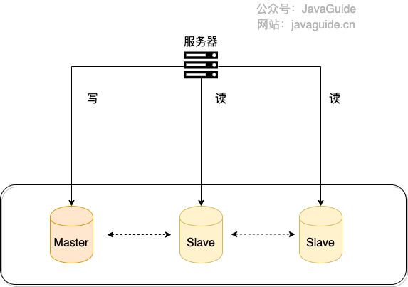
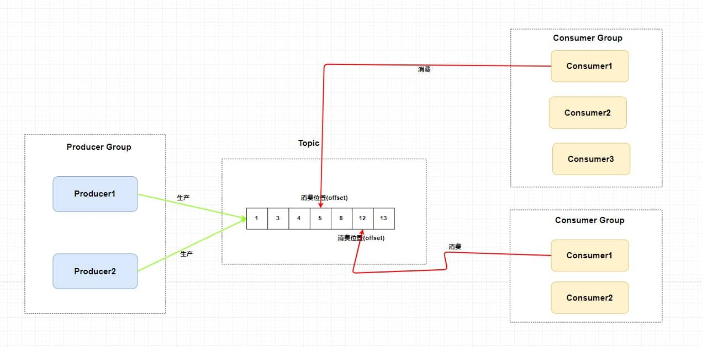
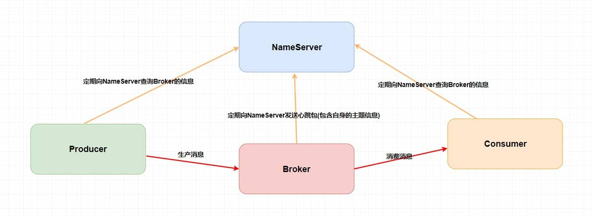
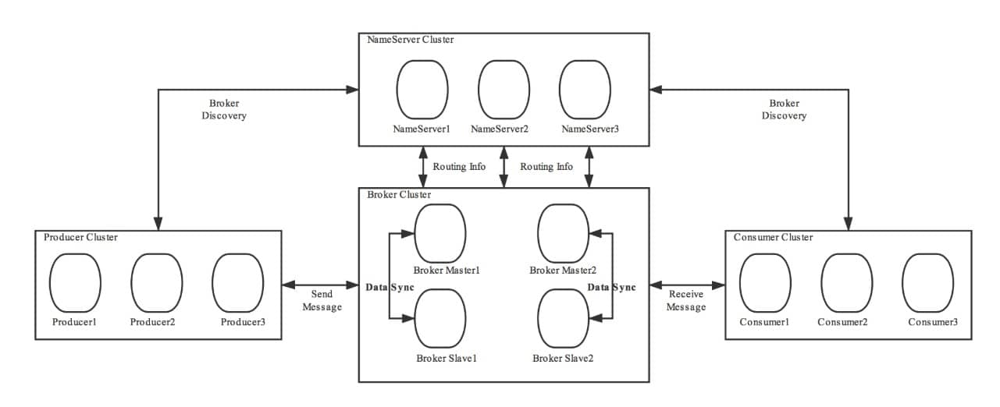
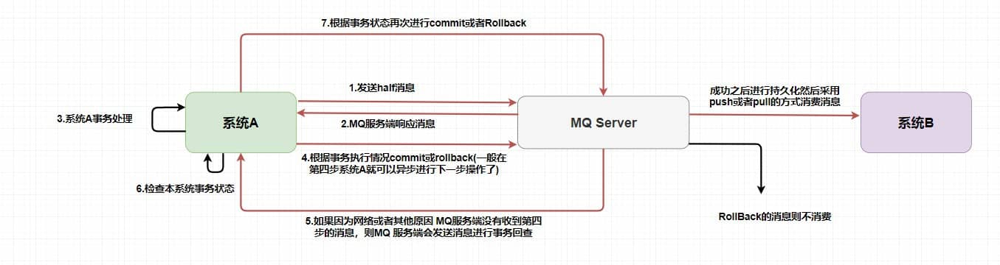
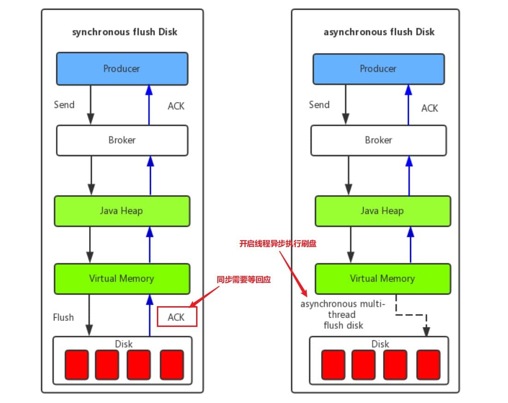
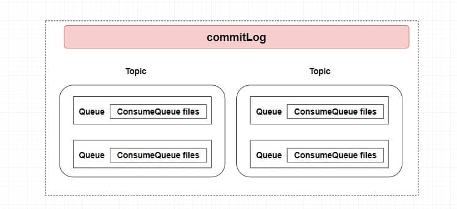

CDN常见问题总结
什么是 CDN ？
CDN 全称是 Content Delivery Network/Content Distribution Network，翻译过的意思是 内容分发网络 。
我们可以将内容分发网络拆开来看：
- 内容：指的是静态资源比如图片、视频、文档、JS、CSS、HTML。
- 分发网络：指的是将这些静态资源分发到位于多个不同的地理位置机房中的服务器上，这样，就可以实现静态资源的就近访问比如北京的用户直接访问北京机房的数据。
所以，简单来说，CDN 就是将静态资源分发到多个不同的地方以实现就近访问，进而加快静态资源的访问速度，减轻服务器以及带宽的负担。
类似于京东建立的庞大的仓储运输体系，京东物流在全国拥有非常多的仓库，仓储网络几乎覆盖全国所有区县。这样的话，用户下单的第一时间，商品就从距离用户最近的仓库，直接发往对应的配送站，再由京东小哥送到你家。
你可以将 CDN 看作是服务上一层的特殊缓存服务，分布在全国各地，主要用来处理静态资源的请求。
我们经常拿全站加速和内容分发网络做对比，不要把两者搞混了！全站加速（不同云服务商叫法不同，腾讯云叫 ECDN、阿里云叫 DCDN）既可以加速静态资源又可以加速动态资源，内容分发网络（CDN）主要针对的是 静态资源 。
绝大部分公司都会在项目开发中交使用 CDN 服务，但很少会有自建 CDN 服务的公司。基于成本、稳定性和易用性考虑，建议直接选择专业的云厂商（比如阿里云、腾讯云、华为云、青云）或者 CDN 厂商（比如网宿、蓝汛）提供的开箱即用的 CDN 服务。
很多朋友可能要问了：既然是就近访问，为什么不直接将服务部署在多个不同的地方呢？
- 成本太高，需要部署多份相同的服务。
- 静态资源通常占用空间比较大且经常会被访问到，如果直接使用服务器或者缓存来处理静态资源请求的话，对系统资源消耗非常大，可能会影响到系统其他服务的正常运行。
同一个服务在在多个不同的地方部署多份（比如同城灾备、异地灾备、同城多活、异地多活）是为了实现系统的高可用而不是就近访问。
CDN 工作原理是什么？
搞懂下面 3 个问题也就搞懂了 CDN 的工作原理：
- 静态资源是如何被缓存到 CDN 节点中的？
- 如何找到最合适的 CDN 节点？
- 如何防止静态资源被盗用？
静态资源是如何被缓存到 CDN 节点中的？
你可以通过 预热 的方式将源站的资源同步到 CDN 的节点中。这样的话，用户首次请求资源可以直接从 CDN 节点中取，无需回源。这样可以降低源站压力，提升用户体验。
如果不预热的话，你访问的资源可能不在 CDN 节点中，这个时候 CDN 节点将请求源站获取资源，这个过程是大家经常说的 回源。
- 回源：当 CDN 节点上没有用户请求的资源或该资源的缓存已经过期时，CDN 节点需要从原始服务器获取最新的资源内容，这个过程就是回源。当用户请求发生回源的话，会导致该请求的响应速度比未使用 CDN 还慢，因为相比于未使用 CDN 还多了一层 CDN 的调用流程。
- 预热：预热是指在 CDN 上提前将内容缓存到 CDN 节点上。这样当用户在请求这些资源时，能够快速地从最近的 CDN 节点获取到而不需要回源，进而减少了对源站的访问压力，提高了访问速度。
如果资源有更新的话，你也可以对其 刷新 ，删除 CDN 节点上缓存的旧资源，并强制 CDN 节点回源站获取最新资源。
几乎所有云厂商提供的 CDN 服务都具备缓存的刷新和预热功能（下图是阿里云 CDN 服务提供的相应功能）：
命中率 和 回源率 是衡量 CDN 服务质量两个重要指标。命中率越高越好，回源率越低越好。
如何找到最合适的 CDN 节点？
GSLB （Global Server Load Balance，全局负载均衡）是 CDN 的大脑，负责多个 CDN 节点之间相互协作，最常用的是基于 DNS 的 GSLB。
CDN 会通过 GSLB 找到最合适的 CDN 节点，更具体点来说是下面这样的：
- 浏览器向 DNS 服务器发送域名请求；
- DNS 服务器向根据 CNAME( Canonical Name ) 别名记录向 GSLB 发送请求；
- GSLB 返回性能最好（通常距离请求地址最近）的 CDN 节点（边缘服务器，真正缓存内容的地方）的地址给浏览器；
- 浏览器直接访问指定的 CDN 节点。
为了方便理解，上图其实做了一点简化。GSLB 内部可以看作是 CDN 专用 DNS 服务器和负载均衡系统组合。CDN 专用 DNS 服务器会返回负载均衡系统 IP 地址给浏览器，浏览器使用 IP 地址请求负载均衡系统进而找到对应的 CDN 节点。
GSLB 是如何选择出最合适的 CDN 节点呢？ GSLB 会根据请求的 IP 地址、CDN 节点状态（比如负载情况、性能、响应时间、带宽）等指标来综合判断具体返回哪一个 CDN 节点的地址。
如何防止资源被盗刷？
如果我们的资源被其他用户或者网站非法盗刷的话，将会是一笔不小的开支。
解决这个问题最常用最简单的办法设置 Referer 防盗链，具体来说就是根据 HTTP 请求的头信息里面的 Referer 字段对请求进行限制。我们可以通过 Referer 字段获取到当前请求页面的来源页面的网站地址，这样我们就能确定请求是否来自合法的网站。
CDN 服务提供商几乎都提供了这种比较基础的防盗链机制。
不过，如果站点的防盗链配置允许 Referer 为空的话，通过隐藏 Referer，可以直接绕开防盗链。
通常情况下，我们会配合其他机制来确保静态资源被盗用，一种常用的机制是 时间戳防盗链 。相比之下，时间戳防盗链 的安全性更强一些。时间戳防盗链加密的 URL 具有时效性，过期之后就无法再被允许访问。
时间戳防盗链的 URL 通常会有两个参数一个是签名字符串，一个是过期时间。签名字符串一般是通过对用户设定的加密字符串、请求路径、过期时间通过 MD5 哈希算法取哈希的方式获得。
时间戳防盗链 URL 示例：
|
|
wsSecret：签名字符串。wsTime: 过期时间。
时间戳防盗链的实现也比较简单，并且可靠性较高，推荐使用。并且，绝大部分 CDN 服务提供商都提供了开箱即用的时间戳防盗链机制。
除了 Referer 防盗链和时间戳防盗链之外，你还可以 IP 黑白名单配置、IP 访问限频配置等机制来防盗刷。
总结
- CDN 就是将静态资源分发到多个不同的地方以实现就近访问，进而加快静态资源的访问速度，减轻服务器以及带宽的负担。
- 基于成本、稳定性和易用性考虑，建议直接选择专业的云厂商（比如阿里云、腾讯云、华为云、青云）或者 CDN 厂商（比如网宿、蓝汛）提供的开箱即用的 CDN 服务。
- GSLB （Global Server Load Balance，全局负载均衡）是 CDN 的大脑，负责多个 CDN 节点之间相互协作，最常用的是基于 DNS 的 GSLB。CDN 会通过 GSLB 找到最合适的 CDN 节点。
- 为了防止静态资源被盗用，我们可以利用 Referer 防盗链 + 时间戳防盗链 。
负载均衡常见问题总结
什么是负载均衡？
负载均衡 指的是将用户请求分摊到不同的服务器上处理，以提高系统整体的并发处理能力以及可靠性。负载均衡服务可以有由专门的软件或者硬件来完成，一般情况下，硬件的性能更好，软件的价格更便宜（后文会详细介绍到）。
下图是《Java 面试指北》 「高并发篇」中的一篇文章的配图，从图中可以看出，系统的商品服务部署了多份在不同的服务器上，为了实现访问商品服务请求的分流，我们用到了负载均衡。

负载均衡是一种比较常用且实施起来较为简单的提高系统并发能力和可靠性的手段，不论是单体架构的系统还是微服务架构的系统几乎都会用到。
负载均衡分为哪几种？
负载均衡可以简单分为 服务端负载均衡 和 客户端负载均衡 这两种。
服务端负载均衡涉及到的知识点更多，工作中遇到的也比较多，因为，我会花更多时间来介绍。
服务端负载均衡
服务端负载均衡 主要应用在 系统外部请求 和 网关层 之间，可以使用 软件 或者 硬件 实现。
下图是我画的一个简单的基于 Nginx 的服务端负载均衡示意图：

硬件负载均衡 通过专门的硬件设备（比如 F5、A10、Array ）实现负载均衡功能。
硬件负载均衡的优势是性能很强且稳定，缺点就是实在是太贵了。像基础款的 F5 最低也要 20 多万，绝大部分公司是根本负担不起的，业务量不大的话，真没必要非要去弄个硬件来做负载均衡，用软件负载均衡就足够了！
在我们日常开发中，一般很难接触到硬件负载均衡，接触的比较多的还是 软件负载均衡 。软件负载均衡通过软件（比如 LVS、Nginx、HAproxy ）实现负载均衡功能，性能虽然差一些，但价格便宜啊！像基础款的 Linux 服务器也就几千，性能好一点的 2~3 万的就很不错了。
根据 OSI 模型，服务端负载均衡还可以分为：
- 二层负载均衡
- 三层负载均衡
- 四层负载均衡
- 七层负载均衡
最常见的是四层和七层负载均衡，因此，本文也是重点介绍这两种负载均衡。
Nginx 官网对四层负载和七层负载均衡均衡做了详细介绍，感兴趣的可以看看。

- 四层负载均衡 工作在 OSI 模型第四层，也就是传输层，这一层的主要协议是 TCP/UDP，负载均衡器在这一层能够看到数据包里的源端口地址以及目的端口地址，会基于这些信息通过一定的负载均衡算法将数据包转发到后端真实服务器。也就是说，四层负载均衡的核心就是 IP+端口层面的负载均衡，不涉及具体的报文内容。
- 七层负载均衡 工作在 OSI 模型第七层，也就是应用层，这一层的主要协议是 HTTP 。这一层的负载均衡比四层负载均衡路由网络请求的方式更加复杂，它会读取报文的数据部分（比如说我们的 HTTP 部分的报文），然后根据读取到的数据内容（如 URL、Cookie）做出负载均衡决策。也就是说，七层负载均衡器的核心是报文内容（如 URL、Cookie）层面的负载均衡，执行第七层负载均衡的设备通常被称为 反向代理服务器 。
七层负载均衡比四层负载均衡会消耗更多的性能，不过，也相对更加灵活，能够更加智能地路由网络请求，比如说你可以根据请求的内容进行优化如缓存、压缩、加密。
简单来说，四层负载均衡性能更强，七层负载均衡功能更强！ 不过，对于绝大部分业务场景来说，四层负载均衡和七层负载均衡的性能差异基本可以忽略不计的。
下面这段话摘自 Nginx 官网的 What Is Layer 4 Load Balancing? 这篇文章。
Layer 4 load balancing was a popular architectural approach to traffic handling when commodity hardware was not as powerful as it is now, and the interaction between clients and application servers was much less complex. It requires less computation than more sophisticated load balancing methods (such as Layer 7), but CPU and memory are now sufficiently fast and cheap that the performance advantage for Layer 4 load balancing has become negligible or irrelevant in most situations.
第 4 层负载平衡是一种流行的流量处理体系结构方法，当时商用硬件没有现在这么强大，客户端和应用程序服务器之间的交互也不那么复杂。它比更复杂的负载平衡方法(如第 7 层)需要更少的计算量，但是 CPU 和内存现在足够快和便宜，在大多数情况下，第 4 层负载平衡的性能优势已经变得微不足道或无关紧要。
在工作中，我们通常会使用 Nginx 来做七层负载均衡，LVS(Linux Virtual Server 虚拟服务器， Linux 内核的 4 层负载均衡)来做四层负载均衡。
不过，LVS 这个绝大部分公司真用不上，像阿里、百度、腾讯、eBay 等大厂才会使用到，用的最多的还是 Nginx。
客户端负载均衡
客户端负载均衡 主要应用于系统内部的不同的服务之间，可以使用现成的负载均衡组件来实现。
在客户端负载均衡中，客户端会自己维护一份服务器的地址列表，发送请求之前，客户端会根据对应的负载均衡算法来选择具体某一台服务器处理请求。
客户端负载均衡器和服务运行在同一个进程或者说 Java 程序里，不存在额外的网络开销。不过，客户端负载均衡的实现会受到编程语言的限制，比如说 Spring Cloud Load Balancer 就只能用于 Java 语言。
Java 领域主流的微服务框架 Dubbo、Spring Cloud 等都内置了开箱即用的客户端负载均衡实现。Dubbo 属于是默认自带了负载均衡功能，Spring Cloud 是通过组件的形式实现的负载均衡，属于可选项，比较常用的是 Spring Cloud Load Balancer（官方，推荐） 和 Ribbon（Netflix，已被启用）。
下图是我画的一个简单的基于 Spring Cloud Load Balancer（Ribbon 也类似） 的客户端负载均衡示意图：

负载均衡常见的算法有哪些？
随机法
随机法 是最简单粗暴的负载均衡算法。
如果没有配置权重的话，所有的服务器被访问到的概率都是相同的。如果配置权重的话，权重越高的服务器被访问的概率就越大。
未加权重的随机算法适合于服务器性能相近的集群，其中每个服务器承载相同的负载。加权随机算法适合于服务器性能不等的集群，权重的存在可以使请求分配更加合理化。
不过，随机算法有一个比较明显的缺陷：部分机器在一段时间之内无法被随机到，毕竟是概率算法，就算是大家权重一样， 也可能会出现这种情况。
于是，轮询法 来了！
轮询法
轮询法是挨个轮询服务器处理，也可以设置权重。
如果没有配置权重的话，每个请求按时间顺序逐一分配到不同的服务器处理。如果配置权重的话，权重越高的服务器被访问的次数就越多。
未加权重的轮询算法适合于服务器性能相近的集群，其中每个服务器承载相同的负载。加权轮询算法适合于服务器性能不等的集群，权重的存在可以使请求分配更加合理化。
一致性 Hash 法
相同参数的请求总是发到同一台服务器处理，比如同个 IP 的请求。
最小连接法
当有新的请求出现时，遍历服务器节点列表并选取其中活动连接数最小的一台服务器来响应当前请求。活动连接数可以理解为当前正在处理的请求数。
最小连接法可以尽可能最大地使请求分配更加合理化，提高服务器的利用率。不过，这种方法实现起来也最复杂，需要监控每一台服务器处理的请求连接数。
七层负载均衡可以怎么做？
简单介绍两种项目中常用的七层负载均衡解决方案：DNS 解析和反向代理。
除了我介绍的这两种解决方案之外，HTTP 重定向等手段也可以用来实现负载均衡，不过，相对来说，还是 DNS 解析和反向代理用的更多一些，也更推荐一些。
DNS 解析
DNS 解析是比较早期的七层负载均衡实现方式，非常简单。
DNS 解析实现负载均衡的原理是这样的：在 DNS 服务器中为同一个主机记录配置多个 IP 地址，这些 IP 地址对应不同的服务器。当用户请求域名的时候，DNS 服务器采用轮询算法返回 IP 地址，这样就实现了轮询版负载均衡。

现在的 DNS 解析几乎都支持 IP 地址的权重配置，这样的话，在服务器性能不等的集群中请求分配会更加合理化。像我自己目前正在用的阿里云 DNS 就支持权重配置。

反向代理
客户端将请求发送到反向代理服务器，由反向代理服务器去选择目标服务器，获取数据后再返回给客户端。对外暴露的是反向代理服务器地址，隐藏了真实服务器 IP 地址。反向代理“代理”的是目标服务器，这一个过程对于客户端而言是透明的。
Nginx 就是最常用的反向代理服务器，它可以将接收到的客户端请求以一定的规则（负载均衡策略）均匀地分配到这个服务器集群中所有的服务器上。
反向代理负载均衡同样属于七层负载均衡。

客户端负载均衡通常是怎么做的？
我们上面也说了，客户端负载均衡可以使用现成的负载均衡组件来实现。
Netflix Ribbon 和 Spring Cloud Load Balancer 就是目前 Java 生态最流行的两个负载均衡组件。
Ribbon 是老牌负载均衡组件，由 Netflix 开发，功能比较全面，支持的负载均衡策略也比较多。 Spring Cloud Load Balancer 是 Spring 官方为了取代 Ribbon 而推出的，功能相对更简单一些，支持的负载均衡也少一些。
Ribbon 支持的 7 种负载均衡策略：
RandomRule：随机策略。RoundRobinRule（默认）：轮询策略WeightedResponseTimeRule：权重（根据响应时间决定权重）策略BestAvailableRule：最小连接数策略RetryRule：重试策略（按照轮询策略来获取服务，如果获取的服务实例为 null 或已经失效，则在指定的时间之内不断地进行重试来获取服务，如果超过指定时间依然没获取到服务实例则返回 null）AvailabilityFilteringRule：可用敏感性策略（先过滤掉非健康的服务实例，然后再选择连接数较小的服务实例）ZoneAvoidanceRule：区域敏感性策略（根据服务所在区域的性能和服务的可用性来选择服务实例）
Spring Cloud Load Balancer 支持的 2 种负载均衡策略：
RandomLoadBalancer：随机策略RoundRobinLoadBalancer（默认）：轮询策略
|
|
不过，Spring Cloud Load Balancer 支持的负载均衡策略其实不止这两种，ServiceInstanceListSupplier 的实现类同样可以让其支持类似于 Ribbon 的负载均衡策略。这个应该是后续慢慢完善引入的，不看官方文档还真发现不了，所以说阅读官方文档真的很重要！
这里举两个官方的例子：
ZonePreferenceServiceInstanceListSupplier：实现基于区域的负载平衡HintBasedServiceInstanceListSupplier：实现基于 hint 提示的负载均衡
|
|
关于 Spring Cloud Load Balancer 更详细更新的介绍，推荐大家看看官方文档：https://docs.spring.io/spring-cloud-commons/docs/current/reference/html/#spring-cloud-loadbalancer ，一切以官方文档为主。
轮询策略基本可以满足绝大部分项目的需求，我们的实际项目中如果没有特殊需求的话，通常使用的就是默认的轮询策略。并且，Ribbon 和 Spring Cloud Load Balancer 都支持自定义负载均衡策略。
个人建议如非必需 Ribbon 某个特有的功能或者负载均衡策略的话，就优先选择 Spring 官方提供的 Spring Cloud Load Balancer。
最后再说说为什么我不太推荐使用 Ribbon 。
Spring Cloud 2020.0.0 版本移除了 Netflix 除 Eureka 外的所有组件。Spring Cloud Hoxton.M2 是第一个支持 Spring Cloud Load Balancer 来替代 Netfix Ribbon 的版本。
我们早期学习微服务，肯定接触过 Netflix 公司开源的 Feign、Ribbon、Zuul、Hystrix、Eureka 等知名的微服务系统构建所必须的组件，直到现在依然有非常非常多的公司在使用这些组件。不夸张地说，Netflix 公司引领了 Java 技术栈下的微服务发展。
那为什么 Spring Cloud 这么急着移除 Netflix 的组件呢？ 主要是因为在 2018 年的时候，Netflix 宣布其开源的核心组件 Hystrix、Ribbon、Zuul、Eureka 等进入维护状态，不再进行新特性开发，只修 BUG。于是，Spring 官方不得不考虑移除 Netflix 的组件。
Spring Cloud Alibaba 是一个不错的选择，尤其是对于国内的公司和个人开发者来说。
读写分离和分库分表常见问题总结
读写分离
什么是读写分离？
见名思意，根据读写分离的名字，我们就可以知道：读写分离主要是为了将对数据库的读写操作分散到不同的数据库节点上。 这样的话，就能够小幅提升写性能，大幅提升读性能。
我简单画了一张图来帮助不太清楚读写分离的小伙伴理解。

一般情况下，我们都会选择一主多从，也就是一台主数据库负责写，其他的从数据库负责读。主库和从库之间会进行数据同步，以保证从库中数据的准确性。这样的架构实现起来比较简单，并且也符合系统的写少读多的特点。
读写分离会带来什么问题？如何解决？
读写分离对于提升数据库的并发非常有效，但是，同时也会引来一个问题：主库和从库的数据存在延迟，比如你写完主库之后，主库的数据同步到从库是需要时间的，这个时间差就导致了主库和从库的数据不一致性问题。这也就是我们经常说的 主从同步延迟 。
主从同步延迟问题的解决，没有特别好的一种方案（可能是我太菜了，欢迎评论区补充）。你可以根据自己的业务场景，参考一下下面几种解决办法。
1.强制将读请求路由到主库处理。
既然你从库的数据过期了，那我就直接从主库读取嘛！这种方案虽然会增加主库的压力，但是，实现起来比较简单，也是我了解到的使用最多的一种方式。
比如 Sharding-JDBC 就是采用的这种方案。通过使用 Sharding-JDBC 的 HintManager 分片键值管理器，我们可以强制使用主库。
|
|
对于这种方案，你可以将那些必须获取最新数据的读请求都交给主库处理。
2.延迟读取。
还有一些朋友肯定会想既然主从同步存在延迟，那我就在延迟之后读取啊，比如主从同步延迟 0.5s,那我就 1s 之后再读取数据。这样多方便啊！方便是方便，但是也很扯淡。
不过，如果你是这样设计业务流程就会好很多：对于一些对数据比较敏感的场景，你可以在完成写请求之后，避免立即进行请求操作。比如你支付成功之后，跳转到一个支付成功的页面，当你点击返回之后才返回自己的账户。
另外，《MySQL 实战 45 讲》这个专栏中的《读写分离有哪些坑？》这篇文章还介绍了很多其他比较实际的解决办法，感兴趣的小伙伴可以自行研究一下。
如何实现读写分离？
不论是使用哪一种读写分离具体的实现方案，想要实现读写分离一般包含如下几步：
- 部署多台数据库，选择其中的一台作为主数据库，其他的一台或者多台作为从数据库。
- 保证主数据库和从数据库之间的数据是实时同步的，这个过程也就是我们常说的主从复制。
- 系统将写请求交给主数据库处理，读请求交给从数据库处理。
落实到项目本身的话，常用的方式有两种：
1. 代理方式

我们可以在应用和数据中间加了一个代理层。应用程序所有的数据请求都交给代理层处理，代理层负责分离读写请求，将它们路由到对应的数据库中。
提供类似功能的中间件有 MySQL Router（官方）、Atlas（基于 MySQL Proxy）、MaxScale、MyCat。
2. 组件方式
在这种方式中，我们可以通过引入第三方组件来帮助我们读写请求。
这也是我比较推荐的一种方式。这种方式目前在各种互联网公司中用的最多的，相关的实际的案例也非常多。如果你要采用这种方式的话，推荐使用 sharding-jdbc ，直接引入 jar 包即可使用，非常方便。同时，也节省了很多运维的成本。
你可以在 shardingsphere 官方找到 sharding-jdbc 关于读写分离的操作。
主从复制原理是什么？
MySQL binlog(binary log 即二进制日志文件) 主要记录了 MySQL 数据库中数据的所有变化(数据库执行的所有 DDL 和 DML 语句)。因此，我们根据主库的 MySQL binlog 日志就能够将主库的数据同步到从库中。
更具体和详细的过程是这个样子的（图片来自于：《MySQL Master-Slave Replication on the Same Machine》）：
- 主库将数据库中数据的变化写入到 binlog
- 从库连接主库
- 从库会创建一个 I/O 线程向主库请求更新的 binlog
- 主库会创建一个 binlog dump 线程来发送 binlog ，从库中的 I/O 线程负责接收
- 从库的 I/O 线程将接收的 binlog 写入到 relay log 中。
- 从库的 SQL 线程读取 relay log 同步数据本地（也就是再执行一遍 SQL ）。
怎么样？看了我对主从复制这个过程的讲解，你应该搞明白了吧!
你一般看到 binlog 就要想到主从复制。当然，除了主从复制之外，binlog 还能帮助我们实现数据恢复。
🌈 拓展一下：
不知道大家有没有使用过阿里开源的一个叫做 canal 的工具。这个工具可以帮助我们实现 MySQL 和其他数据源比如 Elasticsearch 或者另外一台 MySQL 数据库之间的数据同步。很显然，这个工具的底层原理肯定也是依赖 binlog。canal 的原理就是模拟 MySQL 主从复制的过程，解析 binlog 将数据同步到其他的数据源。
另外，像咱们常用的分布式缓存组件 Redis 也是通过主从复制实现的读写分离。
🌕 简单总结一下：
MySQL 主从复制是依赖于 binlog 。另外，常见的一些同步 MySQL 数据到其他数据源的工具（比如 canal）的底层一般也是依赖 binlog 。
分库分表
读写分离主要应对的是数据库读并发，没有解决数据库存储问题。试想一下：如果 MySQL 一张表的数据量过大怎么办?
换言之，我们该如何解决 MySQL 的存储压力呢？
答案之一就是 分库分表。
什么是分库？
分库 就是将数据库中的数据分散到不同的数据库上，可以垂直分库，也可以水平分库。
垂直分库 就是把单一数据库按照业务进行划分，不同的业务使用不同的数据库，进而将一个数据库的压力分担到多个数据库。
举个例子：说你将数据库中的用户表、订单表和商品表分别单独拆分为用户数据库、订单数据库和商品数据库。

水平分库 是把同一个表按一定规则拆分到不同的数据库中，每个库可以位于不同的服务器上，这样就实现了水平扩展，解决了单表的存储和性能瓶颈的问题。
举个例子：订单表数据量太大，你对订单表进行了水平切分（水平分表），然后将切分后的 2 张订单表分别放在两个不同的数据库。
什么是分表？
分表 就是对单表的数据进行拆分，可以是垂直拆分，也可以是水平拆分。
垂直分表 是对数据表列的拆分，把一张列比较多的表拆分为多张表。
举个例子：我们可以将用户信息表中的一些列单独抽出来作为一个表。
水平分表 是对数据表行的拆分，把一张行比较多的表拆分为多张表，可以解决单一表数据量过大的问题。
举个例子：我们可以将用户信息表拆分成多个用户信息表，这样就可以避免单一表数据量过大对性能造成影响。
水平拆分只能解决单表数据量大的问题，为了提升性能，我们通常会选择将拆分后的多张表放在不同的数据库中。也就是说，水平分表通常和水平分库同时出现。
什么情况下需要分库分表？
遇到下面几种场景可以考虑分库分表：
- 单表的数据达到千万级别以上，数据库读写速度比较缓慢。
- 数据库中的数据占用的空间越来越大，备份时间越来越长。
- 应用的并发量太大。
常见的分片算法有哪些？
分片算法主要解决了数据被水平分片之后，数据究竟该存放在哪个表的问题。
- 哈希分片：求指定 key（比如 id） 的哈希，然后根据哈希值确定数据应被放置在哪个表中。哈希分片比较适合随机读写的场景，不太适合经常需要范围查询的场景。
- 范围分片：按照特性的范围区间（比如时间区间、ID 区间）来分配数据，比如 将
id为1~299999的记录分到第一个库，300000~599999的分到第二个库。范围分片适合需要经常进行范围查找的场景，不太适合随机读写的场景（数据未被分散，容易出现热点数据的问题）。 - 地理位置分片：很多 NewSQL 数据库都支持地理位置分片算法，也就是根据地理位置（如城市、地域）来分配数据。
- 融合算法：灵活组合多种分片算法，比如将哈希分片和范围分片组合。
- ……
分库分表会带来什么问题呢？
记住，你在公司做的任何技术决策，不光是要考虑这个技术能不能满足我们的要求，是否适合当前业务场景，还要重点考虑其带来的成本。
引入分库分表之后，会给系统带来什么挑战呢？
- join 操作：同一个数据库中的表分布在了不同的数据库中，导致无法使用 join 操作。这样就导致我们需要手动进行数据的封装，比如你在一个数据库中查询到一个数据之后，再根据这个数据去另外一个数据库中找对应的数据。
- 事务问题：同一个数据库中的表分布在了不同的数据库中，如果单个操作涉及到多个数据库，那么数据库自带的事务就无法满足我们的要求了。
- 分布式 id：分库之后， 数据遍布在不同服务器上的数据库，数据库的自增主键已经没办法满足生成的主键唯一了。我们如何为不同的数据节点生成全局唯一主键呢？这个时候，我们就需要为我们的系统引入分布式 id 了。
- ……
另外，引入分库分表之后，一般需要 DBA 的参与，同时还需要更多的数据库服务器，这些都属于成本。
分库分表有没有什么比较推荐的方案？
Apache ShardingSphere 是一款分布式的数据库生态系统， 可以将任意数据库转换为分布式数据库，并通过数据分片、弹性伸缩、加密等能力对原有数据库进行增强。
ShardingSphere 项目（包括 Sharding-JDBC、Sharding-Proxy 和 Sharding-Sidecar）是当当捐入 Apache 的，目前主要由京东数科维护。
ShardingSphere 绝对可以说是当前分库分表的首选！ShardingSphere 的功能完善，除了支持读写分离和分库分表，还提供分布式事务、数据库治理、影子库、数据加密和脱敏等功能。
ShardingSphere 提供的功能如下：
ShardingSphere 的优势如下（摘自 ShardingSphere 官方文档：https://shardingsphere.apache.org/document/current/cn/overview/）：
- 极致性能：驱动程序端历经长年打磨，效率接近原生 JDBC，性能极致。
- 生态兼容：代理端支持任何通过 MySQL/PostgreSQL 协议的应用访问，驱动程序端可对接任意实现 JDBC 规范的数据库。
- 业务零侵入：面对数据库替换场景，ShardingSphere 可满足业务无需改造，实现平滑业务迁移。
- 运维低成本：在保留原技术栈不变前提下，对 DBA 学习、管理成本低，交互友好。
- 安全稳定：基于成熟数据库底座之上提供增量能力，兼顾安全性及稳定性。
- 弹性扩展：具备计算、存储平滑在线扩展能力，可满足业务多变的需求。
- 开放生态：通过多层次（内核、功能、生态）插件化能力，为用户提供可定制满足自身特殊需求的独有系统。
另外，ShardingSphere 的生态体系完善，社区活跃，文档完善，更新和发布比较频繁。
艿艿之前写了一篇分库分表的实战文章，各位朋友可以看看：《芋道 Spring Boot 分库分表入门》 。
分库分表后，数据怎么迁移呢？
分库分表之后，我们如何将老库（单库单表）的数据迁移到新库（分库分表后的数据库系统）呢？
比较简单同时也是非常常用的方案就是停机迁移，写个脚本老库的数据写到新库中。比如你在凌晨 2 点，系统使用的人数非常少的时候，挂一个公告说系统要维护升级预计 1 小时。然后，你写一个脚本将老库的数据都同步到新库中。
如果你不想停机迁移数据的话，也可以考虑双写方案。双写方案是针对那种不能停机迁移的场景，实现起来要稍微麻烦一些。具体原理是这样的：
- 我们对老库的更新操作（增删改），同时也要写入新库（双写）。如果操作的数据不存在于新库的话，需要插入到新库中。 这样就能保证，咱们新库里的数据是最新的。
- 在迁移过程，双写只会让被更新操作过的老库中的数据同步到新库，我们还需要自己写脚本将老库中的数据和新库的数据做比对。如果新库中没有，那咱们就把数据插入到新库。如果新库有，旧库没有，就把新库对应的数据删除（冗余数据清理）。
- 重复上一步的操作，直到老库和新库的数据一致为止。
想要在项目中实施双写还是比较麻烦的，很容易会出现问题。我们可以借助上面提到的数据库同步工具 Canal 做增量数据迁移（还是依赖 binlog，开发和维护成本较低）。
总结
- 读写分离主要是为了将对数据库的读写操作分散到不同的数据库节点上。 这样的话，就能够小幅提升写性能，大幅提升读性能。
- 读写分离基于主从复制，MySQL 主从复制是依赖于 binlog 。
- 分库 就是将数据库中的数据分散到不同的数据库上。分表 就是对单表的数据进行拆分，可以是垂直拆分，也可以是水平拆分。
- 引入分库分表之后，需要系统解决事务、分布式 id、无法 join 操作问题。
- ShardingSphere 绝对可以说是当前分库分表的首选！ShardingSphere 的功能完善，除了支持读写分离和分库分表，还提供分布式事务、数据库治理等功能。另外，ShardingSphere 的生态体系完善，社区活跃，文档完善，更新和发布比较频繁。
消息队列基础知识总结
什么是消息队列？
我们可以把消息队列看作是一个存放消息的容器，当我们需要使用消息的时候，直接从容器中取出消息供自己使用即可。由于队列 Queue 是一种先进先出的数据结构，所以消费消息时也是按照顺序来消费的。
参与消息传递的双方称为 生产者 和 消费者 ，生产者负责发送消息，消费者负责处理消息。

我们知道操作系统中的进程通信的一种很重要的方式就是消息队列。我们这里提到的消息队列稍微有点区别，更多指的是各个服务以及系统内部各个组件/模块之前的通信，属于一种 中间件 。
维基百科是这样介绍中间件的：
中间件（英语：Middleware），又译中间件、中介层，是一类提供系统软件和应用软件之间连接、便于软件各部件之间的沟通的软件，应用软件可以借助中间件在不同的技术架构之间共享信息与资源。中间件位于客户机服务器的操作系统之上，管理着计算资源和网络通信。
简单来说：中间件就是一类为应用软件服务的软件，应用软件是为用户服务的，用户不会接触或者使用到中间件。
除了消息队列之外，常见的中间件还有 RPC 框架、分布式组件、HTTP 服务器、任务调度框架、配置中心、数据库层的分库分表工具和数据迁移工具等等。
关于中间件比较详细的介绍可以参考阿里巴巴淘系技术的一篇回答：https://www.zhihu.com/question/19730582/answer/1663627873 。
随着分布式和微服务系统的发展，消息队列在系统设计中有了更大的发挥空间，使用消息队列可以降低系统耦合性、实现任务异步、有效地进行流量削峰，是分布式和微服务系统中重要的组件之一。
消息队列有什么用？
通常来说，使用消息队列能为我们的系统带来下面三点好处：
- 通过异步处理提高系统性能（减少响应所需时间）
- 削峰/限流
- 降低系统耦合性。
如果在面试的时候你被面试官问到这个问题的话，一般情况是你在你的简历上涉及到消息队列这方面的内容，这个时候推荐你结合你自己的项目来回答。
通过异步处理提高系统性能（减少响应所需时间）

将用户的请求数据存储到消息队列之后就立即返回结果。随后，系统再对消息进行消费。
因为用户请求数据写入消息队列之后就立即返回给用户了，但是请求数据在后续的业务校验、写数据库等操作中可能失败。因此，使用消息队列进行异步处理之后，需要适当修改业务流程进行配合，比如用户在提交订单之后，订单数据写入消息队列，不能立即返回用户订单提交成功，需要在消息队列的订单消费者进程真正处理完该订单之后，甚至出库后，再通过电子邮件或短信通知用户订单成功，以免交易纠纷。这就类似我们平时手机订火车票和电影票。
削峰/限流
先将短时间高并发产生的事务消息存储在消息队列中，然后后端服务再慢慢根据自己的能力去消费这些消息，这样就避免直接把后端服务打垮掉。
举例：在电子商务一些秒杀、促销活动中，合理使用消息队列可以有效抵御促销活动刚开始大量订单涌入对系统的冲击。如下图所示：

降低系统耦合性
使用消息队列还可以降低系统耦合性。我们知道如果模块之间不存在直接调用，那么新增模块或者修改模块就对其他模块影响较小，这样系统的可扩展性无疑更好一些。还是直接上图吧：

生产者（客户端）发送消息到消息队列中去，接受者（服务端）处理消息，需要消费的系统直接去消息队列取消息进行消费即可而不需要和其他系统有耦合，这显然也提高了系统的扩展性。
消息队列使用发布-订阅模式工作，消息发送者（生产者）发布消息，一个或多个消息接受者（消费者）订阅消息。 从上图可以看到消息发送者（生产者）和消息接受者（消费者）之间没有直接耦合，消息发送者将消息发送至分布式消息队列即结束对消息的处理，消息接受者从分布式消息队列获取该消息后进行后续处理，并不需要知道该消息从何而来。对新增业务，只要对该类消息感兴趣，即可订阅该消息，对原有系统和业务没有任何影响，从而实现网站业务的可扩展性设计。
消息接受者对消息进行过滤、处理、包装后，构造成一个新的消息类型，将消息继续发送出去，等待其他消息接受者订阅该消息。因此基于事件（消息对象）驱动的业务架构可以是一系列流程。
另外，为了避免消息队列服务器宕机造成消息丢失，会将成功发送到消息队列的消息存储在消息生产者服务器上，等消息真正被消费者服务器处理后才删除消息。在消息队列服务器宕机后，生产者服务器会选择分布式消息队列服务器集群中的其他服务器发布消息。
备注： 不要认为消息队列只能利用发布-订阅模式工作，只不过在解耦这个特定业务环境下是使用发布-订阅模式的。除了发布-订阅模式，还有点对点订阅模式（一个消息只有一个消费者），我们比较常用的是发布-订阅模式。另外，这两种消息模型是 JMS 提供的，AMQP 协议还提供了另外 5 种消息模型。
实现分布式事务
我们知道分布式事务的解决方案之一就是 MQ 事务。
RocketMQ、 Kafka、Pulsar、QMQ 都提供了事务相关的功能。事务允许事件流应用将消费，处理，生产消息整个过程定义为一个原子操作。
详细介绍可以查看 分布式事务详解(付费) 这篇文章。
使用消息队列会带来哪些问题？
- 系统可用性降低： 系统可用性在某种程度上降低，为什么这样说呢？在加入 MQ 之前，你不用考虑消息丢失或者说 MQ 挂掉等等的情况，但是，引入 MQ 之后你就需要去考虑了！
- 系统复杂性提高： 加入 MQ 之后，你需要保证消息没有被重复消费、处理消息丢失的情况、保证消息传递的顺序性等等问题！
- 一致性问题： 我上面讲了消息队列可以实现异步，消息队列带来的异步确实可以提高系统响应速度。但是，万一消息的真正消费者并没有正确消费消息怎么办？这样就会导致数据不一致的情况了!
JMS 和 AMQP
JMS 是什么？
JMS（JAVA Message Service,java 消息服务）是 Java 的消息服务，JMS 的客户端之间可以通过 JMS 服务进行异步的消息传输。JMS（JAVA Message Service，Java 消息服务）API 是一个消息服务的标准或者说是规范，允许应用程序组件基于 JavaEE 平台创建、发送、接收和读取消息。它使分布式通信耦合度更低，消息服务更加可靠以及异步性。
JMS 定义了五种不同的消息正文格式以及调用的消息类型，允许你发送并接收以一些不同形式的数据：
StreamMessage：Java原始值的数据流MapMessage：一套名称-值对TextMessage：一个字符串对象ObjectMessage：一个序列化的 Java 对象BytesMessage：一个字节的数据流
ActiveMQ（已被淘汰） 就是基于 JMS 规范实现的。
JMS 两种消息模型
点到点（P2P）模型

使用**队列（Queue）*作为消息通信载体；满足*生产者与消费者模式，一条消息只能被一个消费者使用，未被消费的消息在队列中保留直到被消费或超时。比如：我们生产者发送 100 条消息的话，两个消费者来消费一般情况下两个消费者会按照消息发送的顺序各自消费一半（也就是你一个我一个的消费。）
发布/订阅（Pub/Sub）模型
发布订阅模型（Pub/Sub） 使用**主题（Topic）*作为消息通信载体，类似于*广播模式；发布者发布一条消息，该消息通过主题传递给所有的订阅者，在一条消息广播之后才订阅的用户则是收不到该条消息的。
AMQP 是什么？
AMQP，即 Advanced Message Queuing Protocol，一个提供统一消息服务的应用层标准 高级消息队列协议（二进制应用层协议），是应用层协议的一个开放标准，为面向消息的中间件设计，兼容 JMS。基于此协议的客户端与消息中间件可传递消息，并不受客户端/中间件同产品，不同的开发语言等条件的限制。
RabbitMQ 就是基于 AMQP 协议实现的。
JMS vs AMQP
| 对比方向 | JMS | AMQP |
|---|---|---|
| 定义 | Java API | 协议 |
| 跨语言 | 否 | 是 |
| 跨平台 | 否 | 是 |
| 支持消息类型 | 提供两种消息模型：①Peer-2-Peer;②Pub/sub | 提供了五种消息模型：①direct exchange；②fanout exchange；③topic change；④headers exchange；⑤system exchange。本质来讲，后四种和 JMS 的 pub/sub 模型没有太大差别，仅是在路由机制上做了更详细的划分； |
| 支持消息类型 | 支持多种消息类型 ，我们在上面提到过 | byte[]（二进制） |
总结：
- AMQP 为消息定义了线路层（wire-level protocol）的协议，而 JMS 所定义的是 API 规范。在 Java 体系中，多个 client 均可以通过 JMS 进行交互，不需要应用修改代码，但是其对跨平台的支持较差。而 AMQP 天然具有跨平台、跨语言特性。
- JMS 支持
TextMessage、MapMessage等复杂的消息类型；而 AMQP 仅支持byte[]消息类型（复杂的类型可序列化后发送）。 - 由于 Exchange 提供的路由算法，AMQP 可以提供多样化的路由方式来传递消息到消息队列，而 JMS 仅支持 队列 和 主题/订阅 方式两种。
RPC 和消息队列的区别
RPC 和消息队列都是分布式微服务系统中重要的组件之一，下面我们来简单对比一下两者：
- 从用途来看：RPC 主要用来解决两个服务的远程通信问题，不需要了解底层网络的通信机制。通过 RPC 可以帮助我们调用远程计算机上某个服务的方法，这个过程就像调用本地方法一样简单。消息队列主要用来降低系统耦合性、实现任务异步、有效地进行流量削峰。
- 从通信方式来看：RPC 是双向直接网络通讯，消息队列是单向引入中间载体的网络通讯。
- 从架构上来看：消息队列需要把消息存储起来，RPC 则没有这个要求，因为前面也说了 RPC 是双向直接网络通讯。
- 从请求处理的时效性来看：通过 RPC 发出的调用一般会立即被处理，存放在消息队列中的消息并不一定会立即被处理。
RPC 和消息队列本质上是网络通讯的两种不同的实现机制，两者的用途不同，万不可将两者混为一谈。
分布式消息队列技术选型
常见的消息队列有哪些？
Kafka
Kafka 是 LinkedIn 开源的一个分布式流式处理平台，已经成为 Apache 顶级项目，早期被用来用于处理海量的日志，后面才慢慢发展成了一款功能全面的高性能消息队列。
流式处理平台具有三个关键功能：
- 消息队列：发布和订阅消息流，这个功能类似于消息队列，这也是 Kafka 也被归类为消息队列的原因。
- 容错的持久方式存储记录消息流：Kafka 会把消息持久化到磁盘，有效避免了消息丢失的风险。
- 流式处理平台： 在消息发布的时候进行处理，Kafka 提供了一个完整的流式处理类库。
Kafka 是一个分布式系统，由通过高性能 TCP 网络协议进行通信的服务器和客户端组成，可以部署在在本地和云环境中的裸机硬件、虚拟机和容器上。
在 Kafka 2.8 之前，Kafka 最被大家诟病的就是其重度依赖于 Zookeeper 做元数据管理和集群的高可用。在 Kafka 2.8 之后，引入了基于 Raft 协议的 KRaft 模式，不再依赖 Zookeeper，大大简化了 Kafka 的架构，让你可以以一种轻量级的方式来使用 Kafka。
不过，要提示一下：如果要使用 KRaft 模式的话，建议选择较高版本的 Kafka，因为这个功能还在持续完善优化中。Kafka 3.3.1 版本是第一个将 KRaft（Kafka Raft）共识协议标记为生产就绪的版本。
Kafka 官网：http://kafka.apache.org/
Kafka 更新记录（可以直观看到项目是否还在维护）：https://kafka.apache.org/downloads
RocketMQ
RocketMQ 是阿里开源的一款云原生“消息、事件、流”实时数据处理平台，借鉴了 Kafka，已经成为 Apache 顶级项目。
RocketMQ 的核心特性（摘自 RocketMQ 官网）：
- 云原生：生与云，长与云，无限弹性扩缩，K8s 友好
- 高吞吐：万亿级吞吐保证，同时满足微服务与大数据场景。
- 流处理：提供轻量、高扩展、高性能和丰富功能的流计算引擎。
- 金融级：金融级的稳定性，广泛用于交易核心链路。
- 架构极简：零外部依赖，Shared-nothing 架构。
- 生态友好：无缝对接微服务、实时计算、数据湖等周边生态。
根据官网介绍：
Apache RocketMQ 自诞生以来，因其架构简单、业务功能丰富、具备极强可扩展性等特点被众多企业开发者以及云厂商广泛采用。历经十余年的大规模场景打磨，RocketMQ 已经成为业内共识的金融级可靠业务消息首选方案，被广泛应用于互联网、大数据、移动互联网、物联网等领域的业务场景。
RocketMQ 官网：https://rocketmq.apache.org/ （文档很详细，推荐阅读）
RocketMQ 更新记录（可以直观看到项目是否还在维护）：https://github.com/apache/rocketmq/releases
RabbitMQ
RabbitMQ 是采用 Erlang 语言实现 AMQP(Advanced Message Queuing Protocol，高级消息队列协议）的消息中间件，它最初起源于金融系统，用于在分布式系统中存储转发消息。
RabbitMQ 发展到今天，被越来越多的人认可，这和它在易用性、扩展性、可靠性和高可用性等方面的卓著表现是分不开的。RabbitMQ 的具体特点可以概括为以下几点：
- 可靠性： RabbitMQ 使用一些机制来保证消息的可靠性，如持久化、传输确认及发布确认等。
- 灵活的路由： 在消息进入队列之前，通过交换器来路由消息。对于典型的路由功能，RabbitMQ 己经提供了一些内置的交换器来实现。针对更复杂的路由功能，可以将多个交换器绑定在一起，也可以通过插件机制来实现自己的交换器。这个后面会在我们讲 RabbitMQ 核心概念的时候详细介绍到。
- 扩展性： 多个 RabbitMQ 节点可以组成一个集群，也可以根据实际业务情况动态地扩展集群中节点。
- 高可用性： 队列可以在集群中的机器上设置镜像，使得在部分节点出现问题的情况下队列仍然可用。
- 支持多种协议： RabbitMQ 除了原生支持 AMQP 协议，还支持 STOMP、MQTT 等多种消息中间件协议。
- 多语言客户端： RabbitMQ 几乎支持所有常用语言，比如 Java、Python、Ruby、PHP、C#、JavaScript 等。
- 易用的管理界面： RabbitMQ 提供了一个易用的用户界面，使得用户可以监控和管理消息、集群中的节点等。在安装 RabbitMQ 的时候会介绍到，安装好 RabbitMQ 就自带管理界面。
- 插件机制： RabbitMQ 提供了许多插件，以实现从多方面进行扩展，当然也可以编写自己的插件。感觉这个有点类似 Dubbo 的 SPI 机制
RabbitMQ 官网：https://www.rabbitmq.com/ 。
RabbitMQ 更新记录（可以直观看到项目是否还在维护）：https://www.rabbitmq.com/news.html
Pulsar
Pulsar 是下一代云原生分布式消息流平台，最初由 Yahoo 开发 ，已经成为 Apache 顶级项目。
Pulsar 集消息、存储、轻量化函数式计算为一体，采用计算与存储分离架构设计，支持多租户、持久化存储、多机房跨区域数据复制，具有强一致性、高吞吐、低延时及高可扩展性等流数据存储特性，被看作是云原生时代实时消息流传输、存储和计算最佳解决方案。
Pulsar 的关键特性如下（摘自官网）：
- 是下一代云原生分布式消息流平台。
- Pulsar 的单个实例原生支持多个集群，可跨机房在集群间无缝地完成消息复制。
- 极低的发布延迟和端到端延迟。
- 可无缝扩展到超过一百万个 topic。
- 简单的客户端 API，支持 Java、Go、Python 和 C++。
- 主题的多种订阅模式（独占、共享和故障转移）。
- 通过 Apache BookKeeper 提供的持久化消息存储机制保证消息传递 。
- 由轻量级的 serverless 计算框架 Pulsar Functions 实现流原生的数据处理。
- 基于 Pulsar Functions 的 serverless connector 框架 Pulsar IO 使得数据更易移入、移出 Apache Pulsar。
- 分层式存储可在数据陈旧时，将数据从热存储卸载到冷/长期存储（如 S3、GCS）中。
Pulsar 官网：https://pulsar.apache.org/
Pulsar 更新记录（可以直观看到项目是否还在维护）：https://github.com/apache/pulsar/releases
ActiveMQ
目前已经被淘汰，不推荐使用，不建议学习。
如何选择？
参考《Java 工程师面试突击第 1 季-中华石杉老师》
| 对比方向 | 概要 |
|---|---|
| 吞吐量 | 万级的 ActiveMQ 和 RabbitMQ 的吞吐量（ActiveMQ 的性能最差）要比十万级甚至是百万级的 RocketMQ 和 Kafka 低一个数量级。 |
| 可用性 | 都可以实现高可用。ActiveMQ 和 RabbitMQ 都是基于主从架构实现高可用性。RocketMQ 基于分布式架构。 Kafka 也是分布式的，一个数据多个副本，少数机器宕机，不会丢失数据，不会导致不可用 |
| 时效性 | RabbitMQ 基于 Erlang 开发，所以并发能力很强，性能极其好，延时很低，达到微秒级，其他几个都是 ms 级。 |
| 功能支持 | Pulsar 的功能更全面，支持多租户、多种消费模式和持久性模式等功能，是下一代云原生分布式消息流平台。 |
| 消息丢失 | ActiveMQ 和 RabbitMQ 丢失的可能性非常低， Kafka、RocketMQ 和 Pulsar 理论上可以做到 0 丢失。 |
总结：
- ActiveMQ 的社区算是比较成熟，但是较目前来说，ActiveMQ 的性能比较差，而且版本迭代很慢，不推荐使用，已经被淘汰了。
- RabbitMQ 在吞吐量方面虽然稍逊于 Kafka、RocketMQ 和 Pulsar，但是由于它基于 Erlang 开发，所以并发能力很强，性能极其好，延时很低，达到微秒级。但是也因为 RabbitMQ 基于 Erlang 开发，所以国内很少有公司有实力做 Erlang 源码级别的研究和定制。如果业务场景对并发量要求不是太高（十万级、百万级），那这几种消息队列中，RabbitMQ 或许是你的首选。
- RocketMQ 和 Pulsar 支持强一致性，对消息一致性要求比较高的场景可以使用。
- RocketMQ 阿里出品，Java 系开源项目，源代码我们可以直接阅读，然后可以定制自己公司的 MQ，并且 RocketMQ 有阿里巴巴的实际业务场景的实战考验。
- Kafka 的特点其实很明显，就是仅仅提供较少的核心功能，但是提供超高的吞吐量，ms 级的延迟，极高的可用性以及可靠性，而且分布式可以任意扩展。同时 Kafka 最好是支撑较少的 topic 数量即可，保证其超高吞吐量。Kafka 唯一的一点劣势是有可能消息重复消费，那么对数据准确性会造成极其轻微的影响，在大数据领域中以及日志采集中，这点轻微影响可以忽略这个特性天然适合大数据实时计算以及日志收集。如果是大数据领域的实时计算、日志采集等场景，用 Kafka 是业内标准的，绝对没问题，社区活跃度很高，绝对不会黄，何况几乎是全世界这个领域的事实性规范。
Disruptor常见问题总结
Disruptor 是什么？
Disruptor 是一个开源的高性能内存队列，诞生初衷是为了解决内存队列的性能和内存安全问题，由英国外汇交易公司 LMAX 开发。
根据 Disruptor 官方介绍，基于 Disruptor 开发的系统 LMAX（新的零售金融交易平台），单线程就能支撑每秒 600 万订单。Martin Fowler 在 2011 年写的一篇文章 The LMAX Architecture 中专门介绍过这个 LMAX 系统的架构，感兴趣的可以看看这篇文章。。
LMAX 公司 2010 年在 QCon 演讲后，Disruptor 获得了业界关注，并获得了 2011 年的 Oracle 官方的 Duke’s Choice Awards(Duke 选择大奖)。
“Duke 选择大奖”旨在表彰过去一年里全球个人或公司开发的、最具影响力的 Java 技术应用，由甲骨文公司主办。含金量非常高！
我专门找到了 Oracle 官方当年颁布获得 Duke’s Choice Awards 项目的那篇文章（文章地址：https://blogs.oracle.com/java/post/and-the-winners-arethe-dukes-choice-award） 。从文中可以看出，同年获得此大奖荣誉的还有大名鼎鼎的 Netty、JRebel 等项目。
Disruptor 提供的功能优点类似于 Kafka、RocketMQ 这类分布式队列，不过，其作为范围是 JVM(内存)。
- Github 地址：https://github.com/LMAX-Exchange/disruptor
- 官方教程： https://lmax-exchange.github.io/disruptor/user-guide/index.html
关于如何在 Spring Boot 项目中使用 Disruptor，可以看这篇文章：Spring Boot + Disruptor 实战入门 。
为什么要用 Disruptor？
Disruptor 主要解决了 JDK 内置线程安全队列的性能和内存安全问题。
JDK 中常见的线程安全的队列如下：
| 队列名字 | 锁 | 是否有界 |
|---|---|---|
ArrayBlockingQueue |
加锁（ReentrantLock） |
有界 |
LinkedBlockingQueue |
加锁（ReentrantLock） |
有界 |
LinkedTransferQueue |
无锁（CAS） |
无界 |
ConcurrentLinkedQueue |
无锁（CAS） |
无界 |
从上表中可以看出：这些队列要不就是加锁有界，要不就是无锁无界。而加锁的的队列势必会影响性能，无界的队列又存在内存溢出的风险。
因此，一般情况下，我们都是不建议使用 JDK 内置线程安全队列。
Disruptor 就不一样了！它在无锁的情况下还能保证队列有界，并且还是线程安全的。
下面这张图是 Disruptor 官网提供的 Disruptor 和 ArrayBlockingQueue 的延迟直方图对比。
Disruptor 真的很快，关于它为什么这么快这个问题，会在后文介绍到。
此外，Disruptor 还提供了丰富的扩展功能比如支持批量操作、支持多种等待策略。
Kafka 和 Disruptor 什么区别？
- Kafka：分布式消息队列，一般用在系统或者服务之间的消息传递，还可以被用作流式处理平台。
- Disruptor：内存级别的消息队列，一般用在系统内部中线程间的消息传递。
哪些组件用到了 Disruptor？
用到 Disruptor 的开源项目还是挺多的，这里简单举几个例子：
- Log4j2：Log4j2 是一款常用的日志框架，它基于 Disruptor 来实现异步日志。
- SOFATracer：SOFATracer 是蚂蚁金服开源的分布式应用链路追踪工具，它基于 Disruptor 来实现异步日志。
- Storm : Storm 是一个开源的分布式实时计算系统，它基于 Disruptor 来实现工作进程内发生的消息传递（同一 Storm 节点上的线程间，无需网络通信）。
- HBase：HBase 是一个分布式列存储数据库系统，它基于 Disruptor 来提高写并发性能。
- ……
Disruptor 核心概念有哪些？
- Event：你可以把 Event 理解为存放在队列中等待消费的消息对象。
- EventFactory：事件工厂用于生产事件，我们在初始化
Disruptor类的时候需要用到。 - EventHandler：Event 在对应的 Handler 中被处理，你可以将其理解为生产消费者模型中的消费者。
- EventProcessor：EventProcessor 持有特定消费者(Consumer)的 Sequence，并提供用于调用事件处理实现的事件循环(Event Loop)。
- Disruptor：事件的生产和消费需要用到
Disruptor对象。 - RingBuffer：RingBuffer（环形数组）用于保存事件。
- WaitStrategy：等待策略。决定了没有事件可以消费的时候，事件消费者如何等待新事件的到来。
- Producer：生产者，只是泛指调用
Disruptor对象发布事件的用户代码，Disruptor 没有定义特定接口或类型。 - ProducerType：指定是单个事件发布者模式还是多个事件发布者模式（发布者和生产者的意思类似，我个人比较喜欢用发布者）。
- Sequencer：Sequencer 是 Disruptor 的真正核心。此接口有两个实现类
SingleProducerSequencer、MultiProducerSequencer，它们定义在生产者和消费者之间快速、正确地传递数据的并发算法。
下面这张图摘自 Disruptor 官网，展示了 LMAX 系统使用 Disruptor 的示例。
Disruptor 等待策略有哪些？
等待策略（WaitStrategy） 决定了没有事件可以消费的时候，事件消费者如何等待新事件的到来。
常见的等待策略有下面这些：
BlockingWaitStrategy：基于ReentrantLock+Condition来实现等待和唤醒操作，实现代码非常简单，是 Disruptor 默认的等待策略。虽然最慢，但也是 CPU 使用率最低和最稳定的选项生产环境推荐使用；BusySpinWaitStrategy：性能很好，存在持续自旋的风险，使用不当会造成 CPU 负载 100%，慎用；LiteBlockingWaitStrategy：基于BlockingWaitStrategy的轻量级等待策略，在没有锁竞争的时候会省去唤醒操作，但是作者说测试不充分，因此不建议使用;TimeoutBlockingWaitStrategy：带超时的等待策略，超时后会执行业务指定的处理逻辑;LiteTimeoutBlockingWaitStrategy：基于TimeoutBlockingWaitStrategy的策略，当没有锁竞争的时候会省去唤醒操作;SleepingWaitStrategy：三段式策略，第一阶段自旋，第二阶段执行 Thread.yield 让出 CPU，第三阶段睡眠执行时间，反复的睡眠；YieldingWaitStrategy：二段式策略，第一阶段自旋，第二阶段执行 Thread.yield 交出 CPU;PhasedBackoffWaitStrategy：四段式策略，第一阶段自旋指定次数，第二阶段自旋指定时间，第三阶段执行Thread.yield交出 CPU，第四阶段调用成员变量的waitFor方法，该成员变量可以被设置为BlockingWaitStrategy、LiteBlockingWaitStrategy、SleepingWaitStrategy三个中的一个。
Disruptor 为什么这么快？
- RingBuffer（环形数组） : Disruptor 内部的 RingBuffer 是通过数组实现的。由于这个数组中的所有元素在初始化时一次性全部创建，因此这些元素的内存地址一般来说是连续的。这样做的好处是，当生产者不断往 RingBuffer 中插入新的事件对象时，这些事件对象的内存地址就能够保持连续，从而利用 CPU 缓存的局部性原理，将相邻的事件对象一起加载到缓存中，提高程序的性能。这类似于 MySQL 的预读机制，将连续的几个页预读到内存里。除此之外，RingBuffer 基于数组还支持批量操作（一次处理多个元素）、还可以避免频繁的内存分配和垃圾回收（RingBuffer 是一个固定大小的数组，当向数组中添加新元素时，如果数组已满，则新元素将覆盖掉最旧的元素）。
- 避免了伪共享问题：CPU 缓存内部是按照 Cache Line（缓存行）管理的，一般的 Cache Line 大小在 64 字节左右。Disruptor 为了确保目标字段独占一个 Cache Line，会在目标字段前后增加了 64 个字节的填充（前 56 个字节和后 8 个字节），这样可以避免 Cache Line 的伪共享（False Sharing）问题。
- 无锁设计：Disruptor 采用无锁设计，避免了传统锁机制带来的竞争和延迟。Disruptor 的无锁实现起来比较复杂，主要是基于 CAS、内存屏障（Memory Barrier）、RingBuffer 等技术实现的。
综上所述，Disruptor 之所以能够如此快，是基于一系列优化策略的综合作用，既充分利用了现代 CPU 缓存结构的特点，又避免了常见的并发问题和性能瓶颈。
关于 Disruptor 高性能队列原理的详细介绍，可以查看这篇文章：Disruptor 高性能队列原理浅析 （参考了美团技术团队的高性能队列——Disruptor这篇文章）。
🌈 这里额外补充一点：数组中对象元素地址连续为什么可以提高性能？
CPU 缓存是通过将最近使用的数据存储在高速缓存中来实现更快的读取速度，并使用预取机制提前加载相邻内存的数据以利用局部性原理。
在计算机系统中，CPU 主要访问高速缓存和内存。高速缓存是一种速度非常快、容量相对较小的内存，通常被分为多级缓存，其中 L1、L2、L3 分别表示一级缓存、二级缓存、三级缓存。越靠近 CPU 的缓存，速度越快，容量也越小。相比之下，内存容量相对较大，但速度较慢。

为了加速数据的读取过程，CPU 会先将数据从内存中加载到高速缓存中，如果下一次需要访问相同的数据，就可以直接从高速缓存中读取，而不需要再次访问内存。这就是所谓的 缓存命中 。另外，为了利用 局部性原理 ，CPU 还会根据之前访问的内存地址预取相邻的内存数据，因为在程序中，连续的内存地址通常会被频繁访问到，这样做可以提高数据的缓存命中率，进而提高程序的性能。
Kafka常见问题总结
Kafka 是什么？主要应用场景有哪些？
Kafka 是一个分布式流式处理平台。这到底是什么意思呢？
流平台具有三个关键功能：
- 消息队列：发布和订阅消息流，这个功能类似于消息队列，这也是 Kafka 也被归类为消息队列的原因。
- 容错的持久方式存储记录消息流：Kafka 会把消息持久化到磁盘，有效避免了消息丢失的风险。
- 流式处理平台： 在消息发布的时候进行处理，Kafka 提供了一个完整的流式处理类库。
Kafka 主要有两大应用场景：
- 消息队列：建立实时流数据管道，以可靠地在系统或应用程序之间获取数据。
- 数据处理： 构建实时的流数据处理程序来转换或处理数据流。
和其他消息队列相比,Kafka 的优势在哪里？
我们现在经常提到 Kafka 的时候就已经默认它是一个非常优秀的消息队列了，我们也会经常拿它跟 RocketMQ、RabbitMQ 对比。我觉得 Kafka 相比其他消息队列主要的优势如下：
- 极致的性能：基于 Scala 和 Java 语言开发，设计中大量使用了批量处理和异步的思想，最高可以每秒处理千万级别的消息。
- 生态系统兼容性无可匹敌：Kafka 与周边生态系统的兼容性是最好的没有之一，尤其在大数据和流计算领域。
实际上在早期的时候 Kafka 并不是一个合格的消息队列，早期的 Kafka 在消息队列领域就像是一个衣衫褴褛的孩子一样，功能不完备并且有一些小问题比如丢失消息、不保证消息可靠性等等。当然，这也和 LinkedIn 最早开发 Kafka 用于处理海量的日志有很大关系，哈哈哈，人家本来最开始就不是为了作为消息队列滴，谁知道后面误打误撞在消息队列领域占据了一席之地。
随着后续的发展，这些短板都被 Kafka 逐步修复完善。所以，Kafka 作为消息队列不可靠这个说法已经过时！
队列模型了解吗？Kafka 的消息模型知道吗？
题外话：早期的 JMS 和 AMQP 属于消息服务领域权威组织所做的相关的标准，我在 JavaGuide的 《消息队列其实很简单》这篇文章中介绍过。但是，这些标准的进化跟不上消息队列的演进速度，这些标准实际上已经属于废弃状态。所以，可能存在的情况是：不同的消息队列都有自己的一套消息模型。
队列模型：早期的消息模型

使用队列（Queue）作为消息通信载体，满足生产者与消费者模式，一条消息只能被一个消费者使用，未被消费的消息在队列中保留直到被消费或超时。 比如：我们生产者发送 100 条消息的话，两个消费者来消费一般情况下两个消费者会按照消息发送的顺序各自消费一半（也就是你一个我一个的消费。）
队列模型存在的问题：
假如我们存在这样一种情况：我们需要将生产者产生的消息分发给多个消费者，并且每个消费者都能接收到完整的消息内容。
这种情况，队列模型就不好解决了。很多比较杠精的人就说：我们可以为每个消费者创建一个单独的队列，让生产者发送多份。这是一种非常愚蠢的做法，浪费资源不说，还违背了使用消息队列的目的。
发布-订阅模型:Kafka 消息模型
发布-订阅模型主要是为了解决队列模型存在的问题。

发布订阅模型（Pub-Sub） 使用主题（Topic） 作为消息通信载体，类似于广播模式；发布者发布一条消息，该消息通过主题传递给所有的订阅者，在一条消息广播之后才订阅的用户则是收不到该条消息的。
在发布 - 订阅模型中，如果只有一个订阅者，那它和队列模型就基本是一样的了。所以说，发布 - 订阅模型在功能层面上是可以兼容队列模型的。
Kafka 采用的就是发布 - 订阅模型。
RocketMQ 的消息模型和 Kafka 基本是完全一样的。唯一的区别是 Kafka 中没有队列这个概念，与之对应的是 Partition（分区）。
什么是 Producer、Consumer、Broker、Topic、Partition？
Kafka 将生产者发布的消息发送到 Topic（主题） 中，需要这些消息的消费者可以订阅这些 Topic（主题），如下图所示：

上面这张图也为我们引出了，Kafka 比较重要的几个概念：
- Producer（生产者） : 产生消息的一方。
- Consumer（消费者） : 消费消息的一方。
- Broker（代理） : 可以看作是一个独立的 Kafka 实例。多个 Kafka Broker 组成一个 Kafka Cluster。
同时，你一定也注意到每个 Broker 中又包含了 Topic 以及 Partition 这两个重要的概念：
- Topic（主题） : Producer 将消息发送到特定的主题，Consumer 通过订阅特定的 Topic(主题) 来消费消息。
- Partition（分区） : Partition 属于 Topic 的一部分。一个 Topic 可以有多个 Partition ，并且同一 Topic 下的 Partition 可以分布在不同的 Broker 上，这也就表明一个 Topic 可以横跨多个 Broker 。这正如我上面所画的图一样。
划重点：Kafka 中的 Partition（分区） 实际上可以对应成为消息队列中的队列。这样是不是更好理解一点？
Kafka 的多副本机制了解吗？带来了什么好处？
还有一点我觉得比较重要的是 Kafka 为分区（Partition）引入了多副本（Replica）机制。分区（Partition）中的多个副本之间会有一个叫做 leader 的家伙，其他副本称为 follower。我们发送的消息会被发送到 leader 副本，然后 follower 副本才能从 leader 副本中拉取消息进行同步。
生产者和消费者只与 leader 副本交互。你可以理解为其他副本只是 leader 副本的拷贝，它们的存在只是为了保证消息存储的安全性。当 leader 副本发生故障时会从 follower 中选举出一个 leader,但是 follower 中如果有和 leader 同步程度达不到要求的参加不了 leader 的竞选。
Kafka 的多分区（Partition）以及多副本（Replica）机制有什么好处呢？
- Kafka 通过给特定 Topic 指定多个 Partition, 而各个 Partition 可以分布在不同的 Broker 上, 这样便能提供比较好的并发能力（负载均衡）。
- Partition 可以指定对应的 Replica 数, 这也极大地提高了消息存储的安全性, 提高了容灾能力，不过也相应的增加了所需要的存储空间。
Zookeeper 在 Kafka 中的作用知道吗？
要想搞懂 zookeeper 在 Kafka 中的作用 一定要自己搭建一个 Kafka 环境然后自己进 zookeeper 去看一下有哪些文件夹和 Kafka 有关，每个节点又保存了什么信息。 一定不要光看不实践，这样学来的也终会忘记！这部分内容参考和借鉴了这篇文章：https://www.jianshu.com/p/a036405f989c 。
下图就是我的本地 Zookeeper ，它成功和我本地的 Kafka 关联上（以下文件夹结构借助 idea 插件 Zookeeper tool 实现）。

ZooKeeper 主要为 Kafka 提供元数据的管理的功能。
从图中我们可以看出，Zookeeper 主要为 Kafka 做了下面这些事情：
- Broker 注册：在 Zookeeper 上会有一个专门用来进行 Broker 服务器列表记录的节点。每个 Broker 在启动时，都会到 Zookeeper 上进行注册，即到
/brokers/ids下创建属于自己的节点。每个 Broker 就会将自己的 IP 地址和端口等信息记录到该节点中去 - Topic 注册：在 Kafka 中，同一个Topic 的消息会被分成多个分区并将其分布在多个 Broker 上，这些分区信息及与 Broker 的对应关系也都是由 Zookeeper 在维护。比如我创建了一个名字为 my-topic 的主题并且它有两个分区，对应到 zookeeper 中会创建这些文件夹：
/brokers/topics/my-topic/Partitions/0、/brokers/topics/my-topic/Partitions/1 - 负载均衡：上面也说过了 Kafka 通过给特定 Topic 指定多个 Partition, 而各个 Partition 可以分布在不同的 Broker 上, 这样便能提供比较好的并发能力。 对于同一个 Topic 的不同 Partition，Kafka 会尽力将这些 Partition 分布到不同的 Broker 服务器上。当生产者产生消息后也会尽量投递到不同 Broker 的 Partition 里面。当 Consumer 消费的时候，Zookeeper 可以根据当前的 Partition 数量以及 Consumer 数量来实现动态负载均衡。
- ……
Kafka 如何保证消息的消费顺序？
我们在使用消息队列的过程中经常有业务场景需要严格保证消息的消费顺序，比如我们同时发了 2 个消息，这 2 个消息对应的操作分别对应的数据库操作是：
- 更改用户会员等级。
- 根据会员等级计算订单价格。
假如这两条消息的消费顺序不一样造成的最终结果就会截然不同。
我们知道 Kafka 中 Partition(分区)是真正保存消息的地方，我们发送的消息都被放在了这里。而我们的 Partition(分区) 又存在于 Topic(主题) 这个概念中，并且我们可以给特定 Topic 指定多个 Partition。

每次添加消息到 Partition(分区) 的时候都会采用尾加法，如上图所示。 Kafka 只能为我们保证 Partition(分区) 中的消息有序。
消息在被追加到 Partition(分区)的时候都会分配一个特定的偏移量（offset）。Kafka 通过偏移量（offset）来保证消息在分区内的顺序性。
所以，我们就有一种很简单的保证消息消费顺序的方法：1 个 Topic 只对应一个 Partition。这样当然可以解决问题，但是破坏了 Kafka 的设计初衷。
Kafka 中发送 1 条消息的时候，可以指定 topic, partition, key,data（数据） 4 个参数。如果你发送消息的时候指定了 Partition 的话，所有消息都会被发送到指定的 Partition。并且，同一个 key 的消息可以保证只发送到同一个 partition，这个我们可以采用表/对象的 id 来作为 key 。
总结一下，对于如何保证 Kafka 中消息消费的顺序，有了下面两种方法：
- 1 个 Topic 只对应一个 Partition。
- （推荐）发送消息的时候指定 key/Partition。
当然不仅仅只有上面两种方法，上面两种方法是我觉得比较好理解的，
Kafka 如何保证消息不丢失
生产者丢失消息的情况
生产者(Producer) 调用send方法发送消息之后，消息可能因为网络问题并没有发送过去。
所以，我们不能默认在调用send方法发送消息之后消息发送成功了。为了确定消息是发送成功，我们要判断消息发送的结果。但是要注意的是 Kafka 生产者(Producer) 使用 send 方法发送消息实际上是异步的操作，我们可以通过 get()方法获取调用结果，但是这样也让它变为了同步操作，示例代码如下：
详细代码见我的这篇文章：Kafka 系列第三篇！10 分钟学会如何在 Spring Boot 程序中使用 Kafka 作为消息队列?
|
|
但是一般不推荐这么做！可以采用为其添加回调函数的形式，示例代码如下：
|
|
如果消息发送失败的话，我们检查失败的原因之后重新发送即可！
另外这里推荐为 Producer 的retries （重试次数）设置一个比较合理的值，一般是 3 ，但是为了保证消息不丢失的话一般会设置比较大一点。设置完成之后，当出现网络问题之后能够自动重试消息发送，避免消息丢失。另外，建议还要设置重试间隔，因为间隔太小的话重试的效果就不明显了，网络波动一次你 3 次一下子就重试完了
消费者丢失消息的情况
我们知道消息在被追加到 Partition(分区)的时候都会分配一个特定的偏移量（offset）。偏移量（offset)表示 Consumer 当前消费到的 Partition(分区)的所在的位置。Kafka 通过偏移量（offset）可以保证消息在分区内的顺序性。

当消费者拉取到了分区的某个消息之后，消费者会自动提交了 offset。自动提交的话会有一个问题，试想一下，当消费者刚拿到这个消息准备进行真正消费的时候，突然挂掉了，消息实际上并没有被消费，但是 offset 却被自动提交了。
解决办法也比较粗暴，我们手动关闭自动提交 offset，每次在真正消费完消息之后再自己手动提交 offset 。 但是，细心的朋友一定会发现，这样会带来消息被重新消费的问题。比如你刚刚消费完消息之后，还没提交 offset，结果自己挂掉了，那么这个消息理论上就会被消费两次。
Kafka 弄丢了消息
我们知道 Kafka 为分区（Partition）引入了多副本（Replica）机制。分区（Partition）中的多个副本之间会有一个叫做 leader 的家伙，其他副本称为 follower。我们发送的消息会被发送到 leader 副本，然后 follower 副本才能从 leader 副本中拉取消息进行同步。生产者和消费者只与 leader 副本交互。你可以理解为其他副本只是 leader 副本的拷贝，它们的存在只是为了保证消息存储的安全性。
试想一种情况：假如 leader 副本所在的 broker 突然挂掉，那么就要从 follower 副本重新选出一个 leader ，但是 leader 的数据还有一些没有被 follower 副本的同步的话，就会造成消息丢失。
设置 acks = all
解决办法就是我们设置 acks = all。acks 是 Kafka 生产者(Producer) 很重要的一个参数。
acks 的默认值即为 1，代表我们的消息被 leader 副本接收之后就算被成功发送。当我们配置 acks = all 表示只有所有 ISR 列表的副本全部收到消息时，生产者才会接收到来自服务器的响应. 这种模式是最高级别的，也是最安全的，可以确保不止一个 Broker 接收到了消息. 该模式的延迟会很高.
设置 replication.factor >= 3
为了保证 leader 副本能有 follower 副本能同步消息，我们一般会为 topic 设置 replication.factor >= 3。这样就可以保证每个 分区(partition) 至少有 3 个副本。虽然造成了数据冗余，但是带来了数据的安全性。
设置 min.insync.replicas > 1
一般情况下我们还需要设置 min.insync.replicas> 1 ，这样配置代表消息至少要被写入到 2 个副本才算是被成功发送。min.insync.replicas 的默认值为 1 ，在实际生产中应尽量避免默认值 1。
但是，为了保证整个 Kafka 服务的高可用性，你需要确保 replication.factor > min.insync.replicas 。为什么呢？设想一下假如两者相等的话，只要是有一个副本挂掉，整个分区就无法正常工作了。这明显违反高可用性！一般推荐设置成 replication.factor = min.insync.replicas + 1。
设置 unclean.leader.election.enable = false
Kafka 0.11.0.0 版本开始 unclean.leader.election.enable 参数的默认值由原来的 true 改为 false
我们最开始也说了我们发送的消息会被发送到 leader 副本，然后 follower 副本才能从 leader 副本中拉取消息进行同步。多个 follower 副本之间的消息同步情况不一样，当我们配置了 unclean.leader.election.enable = false 的话，当 leader 副本发生故障时就不会从 follower 副本中和 leader 同步程度达不到要求的副本中选择出 leader ，这样降低了消息丢失的可能性。
Kafka 如何保证消息不重复消费
kafka 出现消息重复消费的原因：
- 服务端侧已经消费的数据没有成功提交 offset（根本原因）。
- Kafka 侧 由于服务端处理业务时间长或者网络链接等等原因让 Kafka 认为服务假死，触发了分区 rebalance。
解决方案：
-
消费消息服务做幂等校验，比如 Redis 的 set、MySQL 的主键等天然的幂等功能。这种方法最有效。
-
将
enable.auto.commit参数设置为 false，关闭自动提交，开发者在代码中手动提交 offset。那么这里会有个问题：什么时候提交 offset 合适？- 处理完消息再提交：依旧有消息重复消费的风险，和自动提交一样
- 拉取到消息即提交：会有消息丢失的风险。允许消息延时的场景，一般会采用这种方式。然后，通过定时任务在业务不繁忙（比如凌晨）的时候做数据兜底。
RocketMQ常见问题总结
消息队列扫盲
消息队列顾名思义就是存放消息的队列，队列我就不解释了，别告诉我你连队列都不知道是啥吧？
所以问题并不是消息队列是什么，而是 消息队列为什么会出现？消息队列能用来干什么？用它来干这些事会带来什么好处？消息队列会带来副作用吗？
消息队列为什么会出现？
消息队列算是作为后端程序员的一个必备技能吧，因为分布式应用必定涉及到各个系统之间的通信问题，这个时候消息队列也应运而生了。可以说分布式的产生是消息队列的基础，而分布式怕是一个很古老的概念了吧，所以消息队列也是一个很古老的中间件了。
消息队列能用来干什么？
异步
你可能会反驳我，应用之间的通信又不是只能由消息队列解决，好好的通信为什么中间非要插一个消息队列呢？我不能直接进行通信吗？
很好 👍，你又提出了一个概念，同步通信。就比如现在业界使用比较多的 Dubbo 就是一个适用于各个系统之间同步通信的 RPC 框架。
我来举个 🌰 吧，比如我们有一个购票系统，需求是用户在购买完之后能接收到购买完成的短信。
我们省略中间的网络通信时间消耗，假如购票系统处理需要 150ms ，短信系统处理需要 200ms ，那么整个处理流程的时间消耗就是 150ms + 200ms = 350ms。
当然，乍看没什么问题。可是仔细一想你就感觉有点问题，我用户购票在购票系统的时候其实就已经完成了购买，而我现在通过同步调用非要让整个请求拉长时间，而短信系统这玩意又不是很有必要，它仅仅是一个辅助功能增强用户体验感而已。我现在整个调用流程就有点 头重脚轻 的感觉了，购票是一个不太耗时的流程，而我现在因为同步调用，非要等待发送短信这个比较耗时的操作才返回结果。那我如果再加一个发送邮件呢？
这样整个系统的调用链又变长了，整个时间就变成了 550ms。
当我们在学生时代需要在食堂排队的时候，我们和食堂大妈就是一个同步的模型。
我们需要告诉食堂大妈：“姐姐，给我加个鸡腿，再加个酸辣土豆丝，帮我浇点汁上去，多打点饭哦 😋😋😋” 咦~~~ 为了多吃点，真恶心。
然后大妈帮我们打饭配菜，我们看着大妈那颤抖的手和掉落的土豆丝不禁咽了咽口水。
最终我们从大妈手中接过饭菜然后去寻找座位了…
回想一下，我们在给大妈发送需要的信息之后我们是 同步等待大妈给我配好饭菜 的，上面我们只是加了鸡腿和土豆丝，万一我再加一个番茄牛腩，韭菜鸡蛋，这样是不是大妈打饭配菜的流程就会变长，我们等待的时间也会相应的变长。
那后来，我们工作赚钱了有钱去饭店吃饭了，我们告诉服务员来一碗牛肉面加个荷包蛋 (传达一个消息) ，然后我们就可以在饭桌上安心的玩手机了 (干自己其他事情) ，等到我们的牛肉面上了我们就可以吃了。这其中我们也就传达了一个消息，然后我们又转过头干其他事情了。这其中虽然做面的时间没有变短，但是我们只需要传达一个消息就可以干其他事情了，这是一个 异步 的概念。
所以，为了解决这一个问题，聪明的程序员在中间也加了个类似于服务员的中间件——消息队列。这个时候我们就可以把模型给改造了。

这样，我们在将消息存入消息队列之后我们就可以直接返回了(我们告诉服务员我们要吃什么然后玩手机)，所以整个耗时只是 150ms + 10ms = 160ms。
但是你需要注意的是，整个流程的时长是没变的，就像你仅仅告诉服务员要吃什么是不会影响到做面的速度的。
解耦
回到最初同步调用的过程，我们写个伪代码简单概括一下。
那么第二步，我们又添加了一个发送邮件，我们就得重新去修改代码，如果我们又加一个需求：用户购买完还需要给他加积分，这个时候我们是不是又得改代码？
如果你觉得还行，那么我这个时候不要发邮件这个服务了呢，我是不是又得改代码，又得重启应用？
这样改来改去是不是很麻烦，那么 此时我们就用一个消息队列在中间进行解耦 。你需要注意的是，我们后面的发送短信、发送邮件、添加积分等一些操作都依赖于上面的 result ，这东西抽象出来就是购票的处理结果呀，比如订单号，用户账号等等，也就是说我们后面的一系列服务都是需要同样的消息来进行处理。既然这样，我们是不是可以通过 “广播消息” 来实现。
我上面所讲的“广播”并不是真正的广播，而是接下来的系统作为消费者去 订阅 特定的主题。比如我们这里的主题就可以叫做 订票 ，我们购买系统作为一个生产者去生产这条消息放入消息队列，然后消费者订阅了这个主题，会从消息队列中拉取消息并消费。就比如我们刚刚画的那张图，你会发现，在生产者这边我们只需要关注 生产消息到指定主题中 ，而 消费者只需要关注从指定主题中拉取消息 就行了。

如果没有消息队列，每当一个新的业务接入，我们都要在主系统调用新接口、或者当我们取消某些业务，我们也得在主系统删除某些接口调用。有了消息队列，我们只需要关心消息是否送达了队列，至于谁希望订阅，接下来收到消息如何处理，是下游的事情，无疑极大地减少了开发和联调的工作量。
削峰
我们再次回到一开始我们使用同步调用系统的情况，并且思考一下，如果此时有大量用户请求购票整个系统会变成什么样？
如果，此时有一万的请求进入购票系统，我们知道运行我们主业务的服务器配置一般会比较好，所以这里我们假设购票系统能承受这一万的用户请求，那么也就意味着我们同时也会出现一万调用发短信服务的请求。而对于短信系统来说并不是我们的主要业务，所以我们配备的硬件资源并不会太高，那么你觉得现在这个短信系统能承受这一万的峰值么，且不说能不能承受，系统会不会 直接崩溃 了？
短信业务又不是我们的主业务，我们能不能 折中处理 呢？如果我们把购买完成的信息发送到消息队列中，而短信系统 尽自己所能地去消息队列中取消息和消费消息 ，即使处理速度慢一点也无所谓，只要我们的系统没有崩溃就行了。
留得江山在，还怕没柴烧？你敢说每次发送验证码的时候是一发你就收到了的么？
消息队列能带来什么好处？
其实上面我已经说了。异步、解耦、削峰。 哪怕你上面的都没看懂也千万要记住这六个字，因为他不仅是消息队列的精华，更是编程和架构的精华。
消息队列会带来副作用吗？
没有哪一门技术是“银弹”，消息队列也有它的副作用。
比如，本来好好的两个系统之间的调用，我中间加了个消息队列，如果消息队列挂了怎么办呢？是不是 降低了系统的可用性 ？
那这样是不是要保证 HA(高可用)？是不是要搞集群？那么我 整个系统的复杂度是不是上升了 ？
抛开上面的问题不讲，万一我发送方发送失败了，然后执行重试，这样就可能产生重复的消息。
或者我消费端处理失败了，请求重发，这样也会产生重复的消息。
对于一些微服务来说，消费重复消息会带来更大的麻烦，比如增加积分，这个时候我加了多次是不是对其他用户不公平？
那么，又 如何解决重复消费消息的问题 呢？
如果我们此时的消息需要保证严格的顺序性怎么办呢？比如生产者生产了一系列的有序消息(对一个 id 为 1 的记录进行删除增加修改)，但是我们知道在发布订阅模型中，对于主题是无顺序的，那么这个时候就会导致对于消费者消费消息的时候没有按照生产者的发送顺序消费，比如这个时候我们消费的顺序为修改删除增加，如果该记录涉及到金额的话是不是会出大事情？
那么，又 如何解决消息的顺序消费问题 呢？
就拿我们上面所讲的分布式系统来说，用户购票完成之后是不是需要增加账户积分？在同一个系统中我们一般会使用事务来进行解决，如果用 Spring 的话我们在上面伪代码中加入 @Transactional 注解就好了。但是在不同系统中如何保证事务呢？总不能这个系统我扣钱成功了你那积分系统积分没加吧？或者说我这扣钱明明失败了，你那积分系统给我加了积分。
那么，又如何 解决分布式事务问题 呢？
我们刚刚说了，消息队列可以进行削峰操作，那如果我的消费者如果消费很慢或者生产者生产消息很快，这样是不是会将消息堆积在消息队列中？
那么，又如何 解决消息堆积的问题 呢？
可用性降低，复杂度上升，又带来一系列的重复消费，顺序消费，分布式事务，消息堆积的问题，这消息队列还怎么用啊 😵？
别急，办法总是有的。
RocketMQ 是什么？
哇，你个混蛋！上面给我抛出那么多问题，你现在又讲 RocketMQ ，还让不让人活了？！🤬
别急别急，话说你现在清楚 MQ 的构造吗，我还没讲呢，我们先搞明白 MQ 的内部构造，再来看看如何解决上面的一系列问题吧，不过你最好带着问题去阅读和了解喔。
RocketMQ 是一个 队列模型 的消息中间件，具有高性能、高可靠、高实时、分布式 的特点。它是一个采用 Java 语言开发的分布式的消息系统，由阿里巴巴团队开发，在 2016 年底贡献给 Apache，成为了 Apache 的一个顶级项目。 在阿里内部，RocketMQ 很好地服务了集团大大小小上千个应用，在每年的双十一当天，更有不可思议的万亿级消息通过 RocketMQ 流转。
废话不多说，想要了解 RocketMQ 历史的同学可以自己去搜寻资料。听完上面的介绍，你只要知道 RocketMQ 很快、很牛、而且经历过双十一的实践就行了！
队列模型和主题模型是什么？
在谈 RocketMQ 的技术架构之前，我们先来了解一下两个名词概念——队列模型 和 主题模型 。
首先我问一个问题，消息队列为什么要叫消息队列？
你可能觉得很弱智，这玩意不就是存放消息的队列嘛？不叫消息队列叫什么？
的确，早期的消息中间件是通过 队列 这一模型来实现的，可能是历史原因，我们都习惯把消息中间件成为消息队列。
但是，如今例如 RocketMQ、Kafka 这些优秀的消息中间件不仅仅是通过一个 队列 来实现消息存储的。
队列模型
就像我们理解队列一样，消息中间件的队列模型就真的只是一个队列。。。我画一张图给大家理解。

在一开始我跟你提到了一个 “广播” 的概念，也就是说如果我们此时我们需要将一个消息发送给多个消费者(比如此时我需要将信息发送给短信系统和邮件系统)，这个时候单个队列即不能满足需求了。
当然你可以让 Producer 生产消息放入多个队列中，然后每个队列去对应每一个消费者。问题是可以解决，创建多个队列并且复制多份消息是会很影响资源和性能的。而且，这样子就会导致生产者需要知道具体消费者个数然后去复制对应数量的消息队列，这就违背我们消息中间件的 解耦 这一原则。
主题模型
那么有没有好的方法去解决这一个问题呢？有，那就是 主题模型 或者可以称为 发布订阅模型 。
感兴趣的同学可以去了解一下设计模式里面的观察者模式并且手动实现一下，我相信你会有所收获的。
在主题模型中，消息的生产者称为 发布者(Publisher) ，消息的消费者称为 订阅者(Subscriber) ，存放消息的容器称为 主题(Topic) 。
其中，发布者将消息发送到指定主题中，订阅者需要 提前订阅主题 才能接受特定主题的消息。

RocketMQ 中的消息模型
RocketMQ 中的消息模型就是按照 主题模型 所实现的。你可能会好奇这个 主题 到底是怎么实现的呢？你上面也没有讲到呀！
其实对于主题模型的实现来说每个消息中间件的底层设计都是不一样的，就比如 Kafka 中的 分区 ，RocketMQ 中的 队列 ，RabbitMQ 中的 Exchange 。我们可以理解为 主题模型/发布订阅模型 就是一个标准，那些中间件只不过照着这个标准去实现而已。
所以，RocketMQ 中的 主题模型 到底是如何实现的呢？首先我画一张图，大家尝试着去理解一下。

我们可以看到在整个图中有 Producer Group、Topic、Consumer Group 三个角色，我来分别介绍一下他们。
Producer Group生产者组：代表某一类的生产者，比如我们有多个秒杀系统作为生产者，这多个合在一起就是一个Producer Group生产者组，它们一般生产相同的消息。Consumer Group消费者组：代表某一类的消费者，比如我们有多个短信系统作为消费者，这多个合在一起就是一个Consumer Group消费者组，它们一般消费相同的消息。Topic主题：代表一类消息，比如订单消息，物流消息等等。
你可以看到图中生产者组中的生产者会向主题发送消息，而 主题中存在多个队列，生产者每次生产消息之后是指定主题中的某个队列发送消息的。
每个主题中都有多个队列(分布在不同的 Broker中，如果是集群的话，Broker又分布在不同的服务器中)，集群消费模式下，一个消费者集群多台机器共同消费一个 topic 的多个队列，一个队列只会被一个消费者消费。如果某个消费者挂掉，分组内其它消费者会接替挂掉的消费者继续消费。就像上图中 Consumer1 和 Consumer2 分别对应着两个队列，而 Consumer3 是没有队列对应的，所以一般来讲要控制 消费者组中的消费者个数和主题中队列个数相同 。
当然也可以消费者个数小于队列个数，只不过不太建议。如下图。
每个消费组在每个队列上维护一个消费位置 ，为什么呢？
因为我们刚刚画的仅仅是一个消费者组，我们知道在发布订阅模式中一般会涉及到多个消费者组，而每个消费者组在每个队列中的消费位置都是不同的。如果此时有多个消费者组，那么消息被一个消费者组消费完之后是不会删除的(因为其它消费者组也需要呀)，它仅仅是为每个消费者组维护一个 消费位移(offset) ，每次消费者组消费完会返回一个成功的响应，然后队列再把维护的消费位移加一，这样就不会出现刚刚消费过的消息再一次被消费了。

可能你还有一个问题，为什么一个主题中需要维护多个队列 ？
答案是 提高并发能力 。的确，每个主题中只存在一个队列也是可行的。你想一下，如果每个主题中只存在一个队列，这个队列中也维护着每个消费者组的消费位置，这样也可以做到 发布订阅模式 。如下图。

但是，这样我生产者是不是只能向一个队列发送消息？又因为需要维护消费位置所以一个队列只能对应一个消费者组中的消费者，这样是不是其他的 Consumer 就没有用武之地了？从这两个角度来讲，并发度一下子就小了很多。
所以总结来说，RocketMQ 通过使用在一个 Topic 中配置多个队列并且每个队列维护每个消费者组的消费位置 实现了 主题模式/发布订阅模式 。
RocketMQ 的架构图
讲完了消息模型，我们理解起 RocketMQ 的技术架构起来就容易多了。
RocketMQ 技术架构中有四大角色 NameServer、Broker、Producer、Consumer 。我来向大家分别解释一下这四个角色是干啥的。
-
Broker：主要负责消息的存储、投递和查询以及服务高可用保证。说白了就是消息队列服务器嘛，生产者生产消息到Broker，消费者从Broker拉取消息并消费。这里，我还得普及一下关于
Broker、Topic和 队列的关系。上面我讲解了Topic和队列的关系——一个Topic中存在多个队列，那么这个Topic和队列存放在哪呢？一个
Topic分布在多个Broker上，一个Broker可以配置多个Topic，它们是多对多的关系。如果某个
Topic消息量很大，应该给它多配置几个队列(上文中提到了提高并发能力)，并且 尽量多分布在不同Broker上，以减轻某个Broker的压力 。Topic消息量都比较均匀的情况下，如果某个broker上的队列越多，则该broker压力越大。

所以说我们需要配置多个 Broker。
-
NameServer：不知道你们有没有接触过ZooKeeper和Spring Cloud中的Eureka，它其实也是一个 注册中心 ，主要提供两个功能：Broker 管理 和 路由信息管理 。说白了就是Broker会将自己的信息注册到NameServer中，此时NameServer就存放了很多Broker的信息(Broker 的路由表)，消费者和生产者就从NameServer中获取路由表然后照着路由表的信息和对应的Broker进行通信(生产者和消费者定期会向NameServer去查询相关的Broker的信息)。 -
Producer：消息发布的角色，支持分布式集群方式部署。说白了就是生产者。 -
Consumer：消息消费的角色，支持分布式集群方式部署。支持以 push 推，pull 拉两种模式对消息进行消费。同时也支持集群方式和广播方式的消费，它提供实时消息订阅机制。说白了就是消费者。
听完了上面的解释你可能会觉得，这玩意好简单。不就是这样的么？

嗯？你可能会发现一个问题，这老家伙 NameServer 干啥用的，这不多余吗？直接 Producer、Consumer 和 Broker 直接进行生产消息，消费消息不就好了么？
但是，我们上文提到过 Broker 是需要保证高可用的，如果整个系统仅仅靠着一个 Broker 来维持的话，那么这个 Broker 的压力会不会很大？所以我们需要使用多个 Broker 来保证 负载均衡 。
如果说，我们的消费者和生产者直接和多个 Broker 相连，那么当 Broker 修改的时候必定会牵连着每个生产者和消费者，这样就会产生耦合问题，而 NameServer 注册中心就是用来解决这个问题的。
如果还不是很理解的话，可以去看我介绍
Spring Cloud的那篇文章，其中介绍了Eureka注册中心。
当然，RocketMQ 中的技术架构肯定不止前面那么简单，因为上面图中的四个角色都是需要做集群的。我给出一张官网的架构图，大家尝试理解一下。

其实和我们最开始画的那张乞丐版的架构图也没什么区别，主要是一些细节上的差别。听我细细道来 🤨。
第一、我们的 Broker 做了集群并且还进行了主从部署 ，由于消息分布在各个 Broker 上，一旦某个 Broker 宕机，则该Broker 上的消息读写都会受到影响。所以 Rocketmq 提供了 master/slave 的结构， salve 定时从 master 同步数据(同步刷盘或者异步刷盘)，如果 master 宕机，则 slave 提供消费服务，但是不能写入消息 (后面我还会提到哦)。
第二、为了保证 HA ，我们的 NameServer 也做了集群部署，但是请注意它是 去中心化 的。也就意味着它没有主节点，你可以很明显地看出 NameServer 的所有节点是没有进行 Info Replicate 的，在 RocketMQ 中是通过 单个 Broker 和所有 NameServer 保持长连接 ，并且在每隔 30 秒 Broker 会向所有 Nameserver 发送心跳，心跳包含了自身的 Topic 配置信息，这个步骤就对应这上面的 Routing Info 。
第三、在生产者需要向 Broker 发送消息的时候，需要先从 NameServer 获取关于 Broker 的路由信息，然后通过 轮询 的方法去向每个队列中生产数据以达到 负载均衡 的效果。
第四、消费者通过 NameServer 获取所有 Broker 的路由信息后，向 Broker 发送 Pull 请求来获取消息数据。Consumer 可以以两种模式启动—— 广播（Broadcast）和集群（Cluster）。广播模式下，一条消息会发送给 同一个消费组中的所有消费者 ，集群模式下消息只会发送给一个消费者。
如何解决顺序消费和重复消费？
其实，这些东西都是我在介绍消息队列带来的一些副作用的时候提到的，也就是说，这些问题不仅仅挂钩于 RocketMQ ，而是应该每个消息中间件都需要去解决的。
在上面我介绍 RocketMQ 的技术架构的时候我已经向你展示了 它是如何保证高可用的 ，这里不涉及运维方面的搭建，如果你感兴趣可以自己去官网上照着例子搭建属于你自己的 RocketMQ 集群。
其实
Kafka的架构基本和RocketMQ类似，只是它注册中心使用了Zookeeper、它的 分区 就相当于RocketMQ中的 队列 。还有一些小细节不同会在后面提到。
顺序消费
在上面的技术架构介绍中，我们已经知道了 RocketMQ 在主题上是无序的、它只有在队列层面才是保证有序 的。
这又扯到两个概念——普通顺序 和 严格顺序 。
所谓普通顺序是指 消费者通过 同一个消费队列收到的消息是有顺序的 ，不同消息队列收到的消息则可能是无顺序的。普通顺序消息在 Broker 重启情况下不会保证消息顺序性 (短暂时间) 。
所谓严格顺序是指 消费者收到的 所有消息 均是有顺序的。严格顺序消息 即使在异常情况下也会保证消息的顺序性 。
但是，严格顺序看起来虽好，实现它可会付出巨大的代价。如果你使用严格顺序模式，Broker 集群中只要有一台机器不可用，则整个集群都不可用。你还用啥？现在主要场景也就在 binlog 同步。
一般而言，我们的 MQ 都是能容忍短暂的乱序，所以推荐使用普通顺序模式。
那么，我们现在使用了 普通顺序模式 ，我们从上面学习知道了在 Producer 生产消息的时候会进行轮询(取决你的负载均衡策略)来向同一主题的不同消息队列发送消息。那么如果此时我有几个消息分别是同一个订单的创建、支付、发货，在轮询的策略下这 三个消息会被发送到不同队列 ，因为在不同的队列此时就无法使用 RocketMQ 带来的队列有序特性来保证消息有序性了。

那么，怎么解决呢？
其实很简单，我们需要处理的仅仅是将同一语义下的消息放入同一个队列(比如这里是同一个订单)，那我们就可以使用 Hash 取模法 来保证同一个订单在同一个队列中就行了。
重复消费
emmm，就两个字—— 幂等 。在编程中一个幂等 操作的特点是其任意多次执行所产生的影响均与一次执行的影响相同。比如说，这个时候我们有一个订单的处理积分的系统，每当来一个消息的时候它就负责为创建这个订单的用户的积分加上相应的数值。可是有一次，消息队列发送给订单系统 FrancisQ 的订单信息，其要求是给 FrancisQ 的积分加上 500。但是积分系统在收到 FrancisQ 的订单信息处理完成之后返回给消息队列处理成功的信息的时候出现了网络波动(当然还有很多种情况，比如 Broker 意外重启等等)，这条回应没有发送成功。
那么，消息队列没收到积分系统的回应会不会尝试重发这个消息？问题就来了，我再发这个消息，万一它又给 FrancisQ 的账户加上 500 积分怎么办呢？
所以我们需要给我们的消费者实现 幂等 ，也就是对同一个消息的处理结果，执行多少次都不变。
那么如何给业务实现幂等呢？这个还是需要结合具体的业务的。你可以使用 写入 Redis 来保证，因为 Redis 的 key 和 value 就是天然支持幂等的。当然还有使用 数据库插入法 ，基于数据库的唯一键来保证重复数据不会被插入多条。
不过最主要的还是需要 根据特定场景使用特定的解决方案 ，你要知道你的消息消费是否是完全不可重复消费还是可以忍受重复消费的，然后再选择强校验和弱校验的方式。毕竟在 CS 领域还是很少有技术银弹的说法。
而在整个互联网领域，幂等不仅仅适用于消息队列的重复消费问题，这些实现幂等的方法，也同样适用于，在其他场景中来解决重复请求或者重复调用的问题 。比如将 HTTP 服务设计成幂等的，解决前端或者 APP 重复提交表单数据的问题 ，也可以将一个微服务设计成幂等的，解决 RPC 框架自动重试导致的 重复调用问题 。
RocketMQ 如何实现分布式事务？
如何解释分布式事务呢？事务大家都知道吧？要么都执行要么都不执行 。在同一个系统中我们可以轻松地实现事务，但是在分布式架构中，我们有很多服务是部署在不同系统之间的，而不同服务之间又需要进行调用。比如此时我下订单然后增加积分，如果保证不了分布式事务的话，就会出现 A 系统下了订单，但是 B 系统增加积分失败或者 A 系统没有下订单，B 系统却增加了积分。前者对用户不友好，后者对运营商不利，这是我们都不愿意见到的。
那么，如何去解决这个问题呢？
如今比较常见的分布式事务实现有 2PC、TCC 和事务消息(half 半消息机制)。每一种实现都有其特定的使用场景，但是也有各自的问题，都不是完美的解决方案。
在 RocketMQ 中使用的是 事务消息加上事务反查机制 来解决分布式事务问题的。我画了张图，大家可以对照着图进行理解。

在第一步发送的 half 消息 ，它的意思是 在事务提交之前，对于消费者来说，这个消息是不可见的 。
那么，如何做到写入消息但是对用户不可见呢？RocketMQ 事务消息的做法是：如果消息是 half 消息，将备份原消息的主题与消息消费队列，然后 改变主题 为 RMQ_SYS_TRANS_HALF_TOPIC。由于消费组未订阅该主题，故消费端无法消费 half 类型的消息，然后 RocketMQ 会开启一个定时任务，从 Topic 为 RMQ_SYS_TRANS_HALF_TOPIC 中拉取消息进行消费，根据生产者组获取一个服务提供者发送回查事务状态请求，根据事务状态来决定是提交或回滚消息。
你可以试想一下，如果没有从第 5 步开始的 事务反查机制 ，如果出现网路波动第 4 步没有发送成功，这样就会产生 MQ 不知道是不是需要给消费者消费的问题，他就像一个无头苍蝇一样。在 RocketMQ 中就是使用的上述的事务反查来解决的，而在 Kafka 中通常是直接抛出一个异常让用户来自行解决。
你还需要注意的是，在 MQ Server 指向系统 B 的操作已经和系统 A 不相关了，也就是说在消息队列中的分布式事务是——本地事务和存储消息到消息队列才是同一个事务。这样也就产生了事务的最终一致性，因为整个过程是异步的，每个系统只要保证它自己那一部分的事务就行了。
如何解决消息堆积问题？
在上面我们提到了消息队列一个很重要的功能——削峰 。那么如果这个峰值太大了导致消息堆积在队列中怎么办呢？
其实这个问题可以将它广义化，因为产生消息堆积的根源其实就只有两个——生产者生产太快或者消费者消费太慢。
我们可以从多个角度去思考解决这个问题，当流量到峰值的时候是因为生产者生产太快，我们可以使用一些 限流降级 的方法，当然你也可以增加多个消费者实例去水平扩展增加消费能力来匹配生产的激增。如果消费者消费过慢的话，我们可以先检查 是否是消费者出现了大量的消费错误 ，或者打印一下日志查看是否是哪一个线程卡死，出现了锁资源不释放等等的问题。
当然，最快速解决消息堆积问题的方法还是增加消费者实例，不过 同时你还需要增加每个主题的队列数量 。
别忘了在
RocketMQ中，一个队列只会被一个消费者消费 ，如果你仅仅是增加消费者实例就会出现我一开始给你画架构图的那种情况。

什么是回溯消费？
回溯消费是指 Consumer 已经消费成功的消息，由于业务上需求需要重新消费，在RocketMQ 中， Broker 在向Consumer 投递成功消息后，消息仍然需要保留 。并且重新消费一般是按照时间维度，例如由于 Consumer 系统故障，恢复后需要重新消费 1 小时前的数据，那么 Broker 要提供一种机制，可以按照时间维度来回退消费进度。RocketMQ 支持按照时间回溯消费，时间维度精确到毫秒。
这是官方文档的解释，我直接照搬过来就当科普了 😁😁😁。
RocketMQ 的刷盘机制
上面我讲了那么多的 RocketMQ 的架构和设计原理，你有没有好奇
在 Topic 中的 队列是以什么样的形式存在的？
队列中的消息又是如何进行存储持久化的呢？
我在上文中提到的 同步刷盘 和 异步刷盘 又是什么呢？它们会给持久化带来什么样的影响呢？
下面我将给你们一一解释。
同步刷盘和异步刷盘

如上图所示，在同步刷盘中需要等待一个刷盘成功的 ACK ，同步刷盘对 MQ 消息可靠性来说是一种不错的保障，但是 性能上会有较大影响 ，一般地适用于金融等特定业务场景。
而异步刷盘往往是开启一个线程去异步地执行刷盘操作。消息刷盘采用后台异步线程提交的方式进行， 降低了读写延迟 ，提高了 MQ 的性能和吞吐量，一般适用于如发验证码等对于消息保证要求不太高的业务场景。
一般地，异步刷盘只有在 Broker 意外宕机的时候会丢失部分数据，你可以设置 Broker 的参数 FlushDiskType 来调整你的刷盘策略(ASYNC_FLUSH 或者 SYNC_FLUSH)。
同步复制和异步复制
上面的同步刷盘和异步刷盘是在单个结点层面的，而同步复制和异步复制主要是指的 Borker 主从模式下，主节点返回消息给客户端的时候是否需要同步从节点。
- 同步复制：也叫 “同步双写”，也就是说，只有消息同步双写到主从节点上时才返回写入成功 。
- 异步复制：消息写入主节点之后就直接返回写入成功 。
然而，很多事情是没有完美的方案的，就比如我们进行消息写入的节点越多就更能保证消息的可靠性，但是随之的性能也会下降，所以需要程序员根据特定业务场景去选择适应的主从复制方案。
那么，异步复制会不会也像异步刷盘那样影响消息的可靠性呢？
答案是不会的，因为两者就是不同的概念，对于消息可靠性是通过不同的刷盘策略保证的，而像异步同步复制策略仅仅是影响到了 可用性 。为什么呢？其主要原因是 RocketMQ 是不支持自动主从切换的，当主节点挂掉之后，生产者就不能再给这个主节点生产消息了。
比如这个时候采用异步复制的方式，在主节点还未发送完需要同步的消息的时候主节点挂掉了，这个时候从节点就少了一部分消息。但是此时生产者无法再给主节点生产消息了，消费者可以自动切换到从节点进行消费(仅仅是消费)，所以在主节点挂掉的时间只会产生主从结点短暂的消息不一致的情况，降低了可用性，而当主节点重启之后，从节点那部分未来得及复制的消息还会继续复制。
在单主从架构中，如果一个主节点挂掉了，那么也就意味着整个系统不能再生产了。那么这个可用性的问题能否解决呢？一个主从不行那就多个主从的呗，别忘了在我们最初的架构图中，每个 Topic 是分布在不同 Broker 中的。
但是这种复制方式同样也会带来一个问题，那就是无法保证 严格顺序 。在上文中我们提到了如何保证的消息顺序性是通过将一个语义的消息发送在同一个队列中，使用 Topic 下的队列来保证顺序性的。如果此时我们主节点 A 负责的是订单 A 的一系列语义消息，然后它挂了，这样其他节点是无法代替主节点 A 的，如果我们任意节点都可以存入任何消息，那就没有顺序性可言了。
而在 RocketMQ 中采用了 Dledger 解决这个问题。他要求在写入消息的时候，要求至少消息复制到半数以上的节点之后，才给客⼾端返回写⼊成功，并且它是⽀持通过选举来动态切换主节点的。这里我就不展开说明了，读者可以自己去了解。
也不是说
Dledger是个完美的方案，至少在Dledger选举过程中是无法提供服务的，而且他必须要使用三个节点或以上，如果多数节点同时挂掉他也是无法保证可用性的，而且要求消息复制半数以上节点的效率和直接异步复制还是有一定的差距的。
存储机制
还记得上面我们一开始的三个问题吗？到这里第三个问题已经解决了。
但是，在 Topic 中的 队列是以什么样的形式存在的？队列中的消息又是如何进行存储持久化的呢？ 还未解决，其实这里涉及到了 RocketMQ 是如何设计它的存储结构了。我首先想大家介绍 RocketMQ 消息存储架构中的三大角色——CommitLog、ConsumeQueue 和 IndexFile 。
CommitLog：消息主体以及元数据的存储主体，存储Producer端写入的消息主体内容,消息内容不是定长的。单个文件大小默认 1G ，文件名长度为 20 位，左边补零，剩余为起始偏移量，比如 00000000000000000000 代表了第一个文件，起始偏移量为 0，文件大小为 1G=1073741824；当第一个文件写满了，第二个文件为 00000000001073741824，起始偏移量为 1073741824，以此类推。消息主要是顺序写入日志文件，当文件满了，写入下一个文件。ConsumeQueue：消息消费队列，引入的目的主要是提高消息消费的性能(我们再前面也讲了)，由于RocketMQ是基于主题Topic的订阅模式，消息消费是针对主题进行的，如果要遍历commitlog文件中根据Topic检索消息是非常低效的。Consumer即可根据ConsumeQueue来查找待消费的消息。其中，ConsumeQueue（逻辑消费队列）作为消费消息的索引，保存了指定Topic下的队列消息在CommitLog中的起始物理偏移量offset*，消息大小size和消息Tag的HashCode值。*consumequeue文件可以看成是基于topic的commitlog索引文件，故consumequeue文件夹的组织方式如下：topic/queue/file 三层组织结构，具体存储路径为：$HOME/store/consumequeue/{topic}/{queueId}/{fileName}。同样consumequeue文件采取定长设计，每一个条目共 20 个字节，分别为 8 字节的commitlog物理偏移量、4 字节的消息长度、8 字节 taghashcode，单个文件由 30W 个条目组成，可以像数组一样随机访问每一个条目，每个ConsumeQueue文件大小约 5.72M；IndexFile：IndexFile（索引文件）提供了一种可以通过 key 或时间区间来查询消息的方法。这里只做科普不做详细介绍。
总结来说，整个消息存储的结构，最主要的就是 CommitLoq 和 ConsumeQueue 。而 ConsumeQueue 你可以大概理解为 Topic 中的队列。

RocketMQ 采用的是 混合型的存储结构 ，即为 Broker 单个实例下所有的队列共用一个日志数据文件来存储消息。有意思的是在同样高并发的 Kafka 中会为每个 Topic 分配一个存储文件。这就有点类似于我们有一大堆书需要装上书架，RockeMQ 是不分书的种类直接成批的塞上去的，而 Kafka 是将书本放入指定的分类区域的。
而 RocketMQ 为什么要这么做呢？原因是 提高数据的写入效率 ，不分 Topic 意味着我们有更大的几率获取 成批 的消息进行数据写入，但也会带来一个麻烦就是读取消息的时候需要遍历整个大文件，这是非常耗时的。
所以，在 RocketMQ 中又使用了 ConsumeQueue 作为每个队列的索引文件来 提升读取消息的效率。我们可以直接根据队列的消息序号，计算出索引的全局位置（索引序号*索引固定⻓度 20），然后直接读取这条索引，再根据索引中记录的消息的全局位置，找到消息。
讲到这里，你可能对 RockeMQ 的存储架构还有些模糊，没事，我们结合着图来理解一下。
emmm，是不是有一点复杂 🤣，看英文图片和英文文档的时候就不要怂，硬着头皮往下看就行。
如果上面没看懂的读者一定要认真看下面的流程分析！
首先，在最上面的那一块就是我刚刚讲的你现在可以直接 把 ConsumerQueue 理解为 Queue。
在图中最左边说明了红色方块代表被写入的消息，虚线方块代表等待被写入的。左边的生产者发送消息会指定 Topic、QueueId 和具体消息内容，而在 Broker 中管你是哪门子消息，他直接 全部顺序存储到了 CommitLog。而根据生产者指定的 Topic 和 QueueId 将这条消息本身在 CommitLog 的偏移(offset)，消息本身大小，和 tag 的 hash 值存入对应的 ConsumeQueue 索引文件中。而在每个队列中都保存了 ConsumeOffset 即每个消费者组的消费位置(我在架构那里提到了，忘了的同学可以回去看一下)，而消费者拉取消息进行消费的时候只需要根据 ConsumeOffset 获取下一个未被消费的消息就行了。
上述就是我对于整个消息存储架构的大概理解(这里不涉及到一些细节讨论，比如稀疏索引等等问题)，希望对你有帮助。
因为有一个知识点因为写嗨了忘讲了，想想在哪里加也不好，所以我留给大家去思考 🤔🤔 一下吧。
为什么 CommitLog 文件要设计成固定大小的长度呢？提醒：内存映射机制。
总结
总算把这篇博客写完了。我讲的你们还记得吗 😅？
这篇文章中我主要想大家介绍了
- 消息队列出现的原因
- 消息队列的作用(异步，解耦，削峰)
- 消息队列带来的一系列问题(消息堆积、重复消费、顺序消费、分布式事务等等)
- 消息队列的两种消息模型——队列和主题模式
- 分析了
RocketMQ的技术架构(NameServer、Broker、Producer、Comsumer) - 结合
RocketMQ回答了消息队列副作用的解决方案 - 介绍了
RocketMQ的存储机制和刷盘策略
每个程序员都应该知道的延迟数字
Numbers Every Programmer Should Know By Year (colin-scott.github.io)